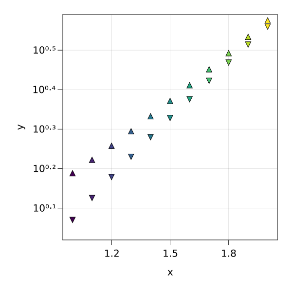
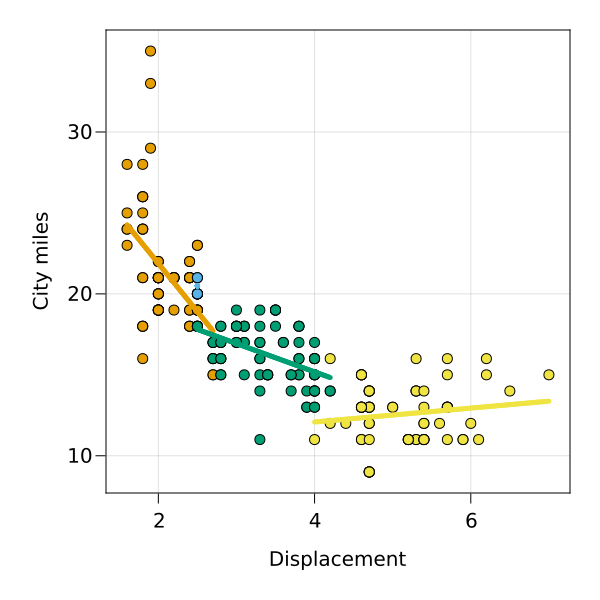

Entries
The key ingredient for data representations are AxisEntries.
The AxisEntries type
An AxisEntries object is made of four components:
- axis,
- entries.
using SplitApplyPlot, CairoMakie
resolution = (600, 600)
fig = Figure(; resolution)
N = 11
rg = range(1, 2, length=N)
ae = AxisEntries(
Axis(fig[1, 1]),
[
Entry(
Scatter,
arguments(rg, cosh.(rg), color=1:N, marker=fill("b", N));
markersize = 15
),
Entry(
Scatter,
arguments(rg, sinh.(rg), color=1:N, marker=fill("c", N));
markersize = 15
),
],
arguments("x", "y", color="identity", marker="function"), #labels
arguments(
identity,
log10,
color=identity,
marker=CategoricalScale(["a", "b", "c"], [:circle, :utriangle, :dtriangle]), #scales
),
)
plot!(ae)
display(fig)
Transforming and accumulating Entries
Generating AxisEntries objects by hand is extremely laborious. SplitApplyPlot provides a simple way to generate them from data.
using RDatasets
mpg = RDatasets.dataset("ggplot2", "mpg")
entries = Entries()
entries(
Visual(Scatter),
mpg,
:Displ => "Displacement",
:Cty => "City miles",
color=:Cyl => categoricalscale => "Cylinders",
)
entries(
Visual(linewidth=5) ∘ Linear(),
mpg,
:Displ => "Displacement",
:Cty => "City miles",
color=:Cyl => categoricalscale => "Cylinders",
)
resolution = (600, 600)
fig = Figure(; resolution)
ag = plot!(fig, entries)1×1 Matrix{AxisEntries}:
AxisEntries(Axis (8 plots), Entry[Entry(AbstractPlotting.Scatter{ArgType} where ArgType, SplitApplyPlot.Arguments(Any[[1.8, 1.8, 2.0, 2.0, 1.8, 1.8, 2.0, 2.0, 2.4, 2.4 … 2.0, 2.0, 1.9, 1.9, 2.0, 2.0, 1.8, 1.8, 2.0, 2.0], Int32[18, 21, 20, 21, 18, 16, 20, 19, 19, 22 … 22, 21, 35, 29, 21, 19, 21, 18, 19, 21]], Dict{Symbol, Any}(:color => Int32[4, 4, 4, 4, 4, 4, 4, 4, 4, 4 … 4, 4, 4, 4, 4, 4, 4, 4, 4, 4])), Dict{Symbol, Any}()), Entry(AbstractPlotting.Scatter{ArgType} where ArgType, SplitApplyPlot.Arguments(Any[[2.8, 2.8, 3.1, 2.8, 2.8, 3.1, 3.1, 2.8, 3.1, 3.1 … 3.4, 3.4, 4.0, 4.0, 2.8, 2.8, 2.8, 2.8, 2.8, 3.6], Int32[16, 18, 18, 15, 17, 17, 15, 15, 17, 18 … 15, 15, 15, 16, 17, 16, 17, 16, 18, 17]], Dict{Symbol, Any}(:color => Int32[6, 6, 6, 6, 6, 6, 6, 6, 6, 6 … 6, 6, 6, 6, 6, 6, 6, 6, 6, 6])), Dict{Symbol, Any}()), Entry(AbstractPlotting.Scatter{ArgType} where ArgType, SplitApplyPlot.Arguments(Any[[4.2, 5.3, 5.3, 5.3, 5.7, 6.0, 5.7, 5.7, 6.2, 6.2 … 5.4, 5.4, 5.4, 4.6, 5.0, 5.6, 5.3, 4.7, 4.7, 5.7], Int32[16, 14, 11, 14, 13, 12, 16, 15, 16, 15 … 11, 11, 12, 13, 13, 12, 16, 14, 11, 13]], Dict{Symbol, Any}(:color => Int32[8, 8, 8, 8, 8, 8, 8, 8, 8, 8 … 8, 8, 8, 8, 8, 8, 8, 8, 8, 8])), Dict{Symbol, Any}()), Entry(AbstractPlotting.Scatter{ArgType} where ArgType, SplitApplyPlot.Arguments(Any[[2.5, 2.5, 2.5, 2.5], Int32[21, 21, 20, 20]], Dict{Symbol, Any}(:color => Int32[5, 5, 5, 5])), Dict{Symbol, Any}()), Entry(AbstractPlotting.Lines{ArgType} where ArgType, SplitApplyPlot.Arguments(Any[[1.6, 1.6111111111111112, 1.6222222222222222, 1.6333333333333333, 1.6444444444444444, 1.6555555555555554, 1.6666666666666667, 1.6777777777777778, 1.6888888888888889, 1.7 … 2.6, 2.611111111111111, 2.6222222222222222, 2.6333333333333333, 2.6444444444444444, 2.6555555555555554, 2.6666666666666665, 2.6777777777777776, 2.688888888888889, 2.7], [24.26578775535586, 24.19954119724027, 24.133294639124678, 24.067048081009084, 24.000801522893493, 23.9345549647779, 23.868308406662308, 23.802061848546717, 23.735815290431123, 23.669568732315533 … 18.30359752495258, 18.237350966836985, 18.171104408721394, 18.1048578506058, 18.03861129249021, 17.97236473437462, 17.906118176259024, 17.839871618143434, 17.77362506002784, 17.70737850191225]], Dict{Symbol, Any}(:color => Int32[4, 4, 4, 4, 4, 4, 4, 4, 4, 4 … 4, 4, 4, 4, 4, 4, 4, 4, 4, 4])), Dict{Symbol, Any}(:linewidth => 5)), Entry(AbstractPlotting.Lines{ArgType} where ArgType, SplitApplyPlot.Arguments(Any[[2.5, 2.5171717171717174, 2.5343434343434343, 2.5515151515151517, 2.5686868686868687, 2.585858585858586, 2.603030303030303, 2.6202020202020204, 2.6373737373737374, 2.6545454545454548 … 4.045454545454546, 4.062626262626263, 4.07979797979798, 4.096969696969697, 4.1141414141414145, 4.1313131313131315, 4.148484848484848, 4.165656565656565, 4.182828282828283, 4.2], [17.805643136567998, 17.77559363412841, 17.74554413168882, 17.715494629249232, 17.685445126809643, 17.655395624370055, 17.625346121930466, 17.595296619490878, 17.565247117051292, 17.535197614611704 … 15.101187917005053, 15.071138414565464, 15.041088912125877, 15.011039409686289, 14.9809899072467, 14.950940404807112, 14.920890902367523, 14.890841399927934, 14.860791897488348, 14.830742395048759]], Dict{Symbol, Any}(:color => Int32[6, 6, 6, 6, 6, 6, 6, 6, 6, 6 … 6, 6, 6, 6, 6, 6, 6, 6, 6, 6])), Dict{Symbol, Any}(:linewidth => 5)), Entry(AbstractPlotting.Lines{ArgType} where ArgType, SplitApplyPlot.Arguments(Any[[4.0, 4.03030303030303, 4.0606060606060606, 4.090909090909091, 4.121212121212121, 4.151515151515151, 4.181818181818182, 4.212121212121212, 4.242424242424242, 4.2727272727272725 … 6.7272727272727275, 6.757575757575758, 6.787878787878788, 6.818181818181818, 6.848484848484849, 6.878787878787879, 6.909090909090909, 6.9393939393939394, 6.96969696969697, 7.0], [12.08499472212117, 12.098006441885593, 12.111018161650016, 12.124029881414438, 12.137041601178861, 12.150053320943284, 12.163065040707707, 12.17607676047213, 12.189088480236553, 12.202100200000976 … 13.25604950091922, 13.269061220683643, 13.282072940448066, 13.295084660212488, 13.308096379976911, 13.321108099741334, 13.334119819505757, 13.34713153927018, 13.360143259034603, 13.373154978799025]], Dict{Symbol, Any}(:color => Int32[8, 8, 8, 8, 8, 8, 8, 8, 8, 8 … 8, 8, 8, 8, 8, 8, 8, 8, 8, 8])), Dict{Symbol, Any}(:linewidth => 5)), Entry(AbstractPlotting.Lines{ArgType} where ArgType, SplitApplyPlot.Arguments(Any[[2.5, 2.5, 2.5, 2.5, 2.5, 2.5, 2.5, 2.5, 2.5, 2.5 … 2.5, 2.5, 2.5, 2.5, 2.5, 2.5, 2.5, 2.5, 2.5, 2.5], [20.499999999999993, 20.499999999999993, 20.499999999999993, 20.499999999999993, 20.499999999999993, 20.499999999999993, 20.499999999999993, 20.499999999999993, 20.499999999999993, 20.499999999999993 … 20.499999999999993, 20.499999999999993, 20.499999999999993, 20.499999999999993, 20.499999999999993, 20.499999999999993, 20.499999999999993, 20.499999999999993, 20.499999999999993, 20.499999999999993]], Dict{Symbol, Any}(:color => Int32[5, 5, 5, 5, 5, 5, 5, 5, 5, 5 … 5, 5, 5, 5, 5, 5, 5, 5, 5, 5])), Dict{Symbol, Any}(:linewidth => 5))], SplitApplyPlot.Arguments(Any["Displacement", "City miles"], Dict{Symbol, Any}(:color => "Cylinders")), SplitApplyPlot.Arguments(Any[identity, identity], Dict{Symbol, Any}(:color => CategoricalScale(Int32[4, 5, 6, 8], ColorTypes.RGB{Float64}[RGB{Float64}(0.9019607843137255,0.6235294117647059,0.0), RGB{Float64}(0.33725490196078434,0.7058823529411765,0.9137254901960784), RGB{Float64}(0.0,0.6196078431372549,0.45098039215686275), RGB{Float64}(0.9411764705882353,0.8941176470588236,0.25882352941176473), RGB{Float64}(0.0,0.4470588235294118,0.6980392156862745), RGB{Float64}(0.8352941176470589,0.3686274509803922,0.0), RGB{Float64}(0.8,0.4745098039215686,0.6549019607843137)]))))This operation returns a grid of AxisEntries and plots them to the original figure:
display(fig)
layout_x and layout_y can be used to return a less trivial grid of axis plots.
resolution = (1200, 1200)
fig = Figure(; resolution)
entries
entries(
Visual(Scatter),
mpg,
:Displ => "Displacement",
:Cty => "City miles",
color=:Cyl => categoricalscale => "Cylinders",
layout_x=:Drv => categoricalscale => "Drive train",
layout_y=:Fl => categoricalscale => "Fuel type",
)
entries(
Visual(linewidth=5) ∘ Linear(),
mpg,
:Displ => "Displacement",
:Cty => "City miles",
color=:Cyl => categoricalscale => "Cylinders",
layout_x=:Drv => categoricalscale => "Drive train",
layout_y=:Fl => categoricalscale => "Fuel type",
)
ag = plot!(fig, entries)5×3 Matrix{AxisEntries}:
AxisEntries(Axis (8 plots), Entry[Entry(Scatter{ArgType} where ArgType, Arguments(Any[[1.8, 1.8, 2.0, 2.0, 1.8, 1.8, 2.0, 2.0, 2.4, 2.4 … 2.0, 2.0, 1.9, 1.9, 2.0, 2.0, 1.8, 1.8, 2.0, 2.0], Int32[18, 21, 20, 21, 18, 16, 20, 19, 19, 22 … 22, 21, 35, 29, 21, 19, 21, 18, 19, 21]], Dict{Symbol, Any}(:color=>Int32[4, 4, 4, 4, 4, 4, 4, 4, 4, 4 … 4, 4, 4, 4, 4, 4, 4, 4, 4, 4])), Dict{Symbol, Any}()), Entry(Scatter{ArgType} where ArgType, Arguments(Any[[2.8, 2.8, 3.1, 2.8, 2.8, 3.1, 3.1, 2.8, 3.1, 3.1 … 3.4, 3.4, 4.0, 4.0, 2.8, 2.8, 2.8, 2.8, 2.8, 3.6], Int32[16, 18, 18, 15, 17, 17, 15, 15, 17, 18 … 15, 15, 15, 16, 17, 16, 17, 16, 18, 17]], Dict{Symbol, Any}(:color=>Int32[6, 6, 6, 6, 6, 6, 6, 6, 6, 6 … 6, 6, 6, 6, 6, 6, 6, 6, 6, 6])), Dict{Symbol, Any}()), Entry(Scatter{ArgType} where ArgType, Arguments(Any[[4.2, 5.3, 5.3, 5.3, 5.7, 6.0, 5.7, 5.7, 6.2, 6.2 … 5.4, 5.4, 5.4, 4.6, 5.0, 5.6, 5.3, 4.7, 4.7, 5.7], Int32[16, 14, 11, 14, 13, 12, 16, 15, 16, 15 … 11, 11, 12, 13, 13, 12, 16, 14, 11, 13]], Dict{Symbol, Any}(:color=>Int32[8, 8, 8, 8, 8, 8, 8, 8, 8, 8 … 8, 8, 8, 8, 8, 8, 8, 8, 8, 8])), Dict{Symbol, Any}()), Entry(Scatter{ArgType} where ArgType, Arguments(Any[[2.5, 2.5, 2.5, 2.5], Int32[21, 21, 20, 20]], Dict{Symbol, Any}(:color=>Int32[5, 5, 5, 5])), Dict{Symbol, Any}()), Entry(Lines{ArgType} where ArgType, Arguments(Any[[1.6, 1.61111, 1.62222, 1.63333, 1.64444, 1.65556, 1.66667, 1.67778, 1.68889, 1.7 … 2.6, 2.61111, 2.62222, 2.63333, 2.64444, 2.65556, 2.66667, 2.67778, 2.68889, 2.7], [24.2658, 24.1995, 24.1333, 24.067, 24.0008, 23.9346, 23.8683, 23.8021, 23.7358, 23.6696 … 18.3036, 18.2374, 18.1711, 18.1049, 18.0386, 17.9724, 17.9061, 17.8399, 17.7736, 17.7074]], Dict{Symbol, Any}(:color=>Int32[4, 4, 4, 4, 4, 4, 4, 4, 4, 4 … 4, 4, 4, 4, 4, 4, 4, 4, 4, 4])), Dict{Symbol, Any}(:linewidth=>5)), Entry(Lines{ArgType} where ArgType, Arguments(Any[[2.5, 2.51717, 2.53434, 2.55152, 2.56869, 2.58586, 2.60303, 2.6202, 2.63737, 2.65455 … 4.04545, 4.06263, 4.0798, 4.09697, 4.11414, 4.13131, 4.14848, 4.16566, 4.18283, 4.2], [17.8056, 17.7756, 17.7455, 17.7155, 17.6854, 17.6554, 17.6253, 17.5953, 17.5652, 17.5352 … 15.1012, 15.0711, 15.0411, 15.011, 14.981, 14.9509, 14.9209, 14.8908, 14.8608, 14.8307]], Dict{Symbol, Any}(:color=>Int32[6, 6, 6, 6, 6, 6, 6, 6, 6, 6 … 6, 6, 6, 6, 6, 6, 6, 6, 6, 6])), Dict{Symbol, Any}(:linewidth=>5)), Entry(Lines{ArgType} where ArgType, Arguments(Any[[4.0, 4.0303, 4.06061, 4.09091, 4.12121, 4.15152, 4.18182, 4.21212, 4.24242, 4.27273 … 6.72727, 6.75758, 6.78788, 6.81818, 6.84848, 6.87879, 6.90909, 6.93939, 6.9697, 7.0], [12.085, 12.098, 12.111, 12.124, 12.137, 12.1501, 12.1631, 12.1761, 12.1891, 12.2021 … 13.256, 13.2691, 13.2821, 13.2951, 13.3081, 13.3211, 13.3341, 13.3471, 13.3601, 13.3732]], Dict{Symbol, Any}(:color=>Int32[8, 8, 8, 8, 8, 8, 8, 8, 8, 8 … 8, 8, 8, 8, 8, 8, 8, 8, 8, 8])), Dict{Symbol, Any}(:linewidth=>5)), Entry(Lines{ArgType} where ArgType, Arguments(Any[[2.5, 2.5, 2.5, 2.5, 2.5, 2.5, 2.5, 2.5, 2.5, 2.5 … 2.5, 2.5, 2.5, 2.5, 2.5, 2.5, 2.5, 2.5, 2.5, 2.5], [20.5, 20.5, 20.5, 20.5, 20.5, 20.5, 20.5, 20.5, 20.5, 20.5 … 20.5, 20.5, 20.5, 20.5, 20.5, 20.5, 20.5, 20.5, 20.5, 20.5]], Dict{Symbol, Any}(:color=>Int32[5, 5, 5, 5, 5, 5, 5, 5, 5, 5 … 5, 5, 5, 5, 5, 5, 5, 5, 5, 5])), Dict{Symbol, Any}(:linewidth=>5))], Arguments(Any["Displacement", "City miles"], Dict{Symbol, Any}(:color=>"Cylinders", :layout_x=>"Drive train", :layout_y=>"Fuel type")), Arguments(Any[identity, identity], Dict{Symbol, Any}(:color=>CategoricalScale(Int32[4, 5, 6, 8], ColorTypes.RGB{Float64}[RGB{Float64}(0.901961,0.623529,0.0), RGB{Float64}(0.337255,0.705882,0.913725), RGB{Float64}(0.0,0.619608,0.45098), RGB{Float64}(0.941176,0.894118,0.258824), RGB{Float64}(0.0,0.447059,0.698039), RGB{Float64}(0.835294,0.368627,0.0), RGB{Float64}(0.8,0.47451,0.654902)]), :layout_x=>CategoricalScale(CategoricalArrays.CategoricalValue{String, UInt8}["4", "f", "r"], Automatic()), :layout_y=>CategoricalScale(CategoricalArrays.CategoricalValue{String, UInt8}["c", "d", "e", "p", "r"], Automatic())))) … AxisEntries(Axis (8 plots), Entry[Entry(Scatter{ArgType} where ArgType, Arguments(Any[[1.8, 1.8, 2.0, 2.0, 1.8, 1.8, 2.0, 2.0, 2.4, 2.4 … 2.0, 2.0, 1.9, 1.9, 2.0, 2.0, 1.8, 1.8, 2.0, 2.0], Int32[18, 21, 20, 21, 18, 16, 20, 19, 19, 22 … 22, 21, 35, 29, 21, 19, 21, 18, 19, 21]], Dict{Symbol, Any}(:color=>Int32[4, 4, 4, 4, 4, 4, 4, 4, 4, 4 … 4, 4, 4, 4, 4, 4, 4, 4, 4, 4])), Dict{Symbol, Any}()), Entry(Scatter{ArgType} where ArgType, Arguments(Any[[2.8, 2.8, 3.1, 2.8, 2.8, 3.1, 3.1, 2.8, 3.1, 3.1 … 3.4, 3.4, 4.0, 4.0, 2.8, 2.8, 2.8, 2.8, 2.8, 3.6], Int32[16, 18, 18, 15, 17, 17, 15, 15, 17, 18 … 15, 15, 15, 16, 17, 16, 17, 16, 18, 17]], Dict{Symbol, Any}(:color=>Int32[6, 6, 6, 6, 6, 6, 6, 6, 6, 6 … 6, 6, 6, 6, 6, 6, 6, 6, 6, 6])), Dict{Symbol, Any}()), Entry(Scatter{ArgType} where ArgType, Arguments(Any[[4.2, 5.3, 5.3, 5.3, 5.7, 6.0, 5.7, 5.7, 6.2, 6.2 … 5.4, 5.4, 5.4, 4.6, 5.0, 5.6, 5.3, 4.7, 4.7, 5.7], Int32[16, 14, 11, 14, 13, 12, 16, 15, 16, 15 … 11, 11, 12, 13, 13, 12, 16, 14, 11, 13]], Dict{Symbol, Any}(:color=>Int32[8, 8, 8, 8, 8, 8, 8, 8, 8, 8 … 8, 8, 8, 8, 8, 8, 8, 8, 8, 8])), Dict{Symbol, Any}()), Entry(Scatter{ArgType} where ArgType, Arguments(Any[[2.5, 2.5, 2.5, 2.5], Int32[21, 21, 20, 20]], Dict{Symbol, Any}(:color=>Int32[5, 5, 5, 5])), Dict{Symbol, Any}()), Entry(Lines{ArgType} where ArgType, Arguments(Any[[1.6, 1.61111, 1.62222, 1.63333, 1.64444, 1.65556, 1.66667, 1.67778, 1.68889, 1.7 … 2.6, 2.61111, 2.62222, 2.63333, 2.64444, 2.65556, 2.66667, 2.67778, 2.68889, 2.7], [24.2658, 24.1995, 24.1333, 24.067, 24.0008, 23.9346, 23.8683, 23.8021, 23.7358, 23.6696 … 18.3036, 18.2374, 18.1711, 18.1049, 18.0386, 17.9724, 17.9061, 17.8399, 17.7736, 17.7074]], Dict{Symbol, Any}(:color=>Int32[4, 4, 4, 4, 4, 4, 4, 4, 4, 4 … 4, 4, 4, 4, 4, 4, 4, 4, 4, 4])), Dict{Symbol, Any}(:linewidth=>5)), Entry(Lines{ArgType} where ArgType, Arguments(Any[[2.5, 2.51717, 2.53434, 2.55152, 2.56869, 2.58586, 2.60303, 2.6202, 2.63737, 2.65455 … 4.04545, 4.06263, 4.0798, 4.09697, 4.11414, 4.13131, 4.14848, 4.16566, 4.18283, 4.2], [17.8056, 17.7756, 17.7455, 17.7155, 17.6854, 17.6554, 17.6253, 17.5953, 17.5652, 17.5352 … 15.1012, 15.0711, 15.0411, 15.011, 14.981, 14.9509, 14.9209, 14.8908, 14.8608, 14.8307]], Dict{Symbol, Any}(:color=>Int32[6, 6, 6, 6, 6, 6, 6, 6, 6, 6 … 6, 6, 6, 6, 6, 6, 6, 6, 6, 6])), Dict{Symbol, Any}(:linewidth=>5)), Entry(Lines{ArgType} where ArgType, Arguments(Any[[4.0, 4.0303, 4.06061, 4.09091, 4.12121, 4.15152, 4.18182, 4.21212, 4.24242, 4.27273 … 6.72727, 6.75758, 6.78788, 6.81818, 6.84848, 6.87879, 6.90909, 6.93939, 6.9697, 7.0], [12.085, 12.098, 12.111, 12.124, 12.137, 12.1501, 12.1631, 12.1761, 12.1891, 12.2021 … 13.256, 13.2691, 13.2821, 13.2951, 13.3081, 13.3211, 13.3341, 13.3471, 13.3601, 13.3732]], Dict{Symbol, Any}(:color=>Int32[8, 8, 8, 8, 8, 8, 8, 8, 8, 8 … 8, 8, 8, 8, 8, 8, 8, 8, 8, 8])), Dict{Symbol, Any}(:linewidth=>5)), Entry(Lines{ArgType} where ArgType, Arguments(Any[[2.5, 2.5, 2.5, 2.5, 2.5, 2.5, 2.5, 2.5, 2.5, 2.5 … 2.5, 2.5, 2.5, 2.5, 2.5, 2.5, 2.5, 2.5, 2.5, 2.5], [20.5, 20.5, 20.5, 20.5, 20.5, 20.5, 20.5, 20.5, 20.5, 20.5 … 20.5, 20.5, 20.5, 20.5, 20.5, 20.5, 20.5, 20.5, 20.5, 20.5]], Dict{Symbol, Any}(:color=>Int32[5, 5, 5, 5, 5, 5, 5, 5, 5, 5 … 5, 5, 5, 5, 5, 5, 5, 5, 5, 5])), Dict{Symbol, Any}(:linewidth=>5))], Arguments(Any["Displacement", "City miles"], Dict{Symbol, Any}(:color=>"Cylinders", :layout_x=>"Drive train", :layout_y=>"Fuel type")), Arguments(Any[identity, identity], Dict{Symbol, Any}(:color=>CategoricalScale(Int32[4, 5, 6, 8], ColorTypes.RGB{Float64}[RGB{Float64}(0.901961,0.623529,0.0), RGB{Float64}(0.337255,0.705882,0.913725), RGB{Float64}(0.0,0.619608,0.45098), RGB{Float64}(0.941176,0.894118,0.258824), RGB{Float64}(0.0,0.447059,0.698039), RGB{Float64}(0.835294,0.368627,0.0), RGB{Float64}(0.8,0.47451,0.654902)]), :layout_x=>CategoricalScale(CategoricalArrays.CategoricalValue{String, UInt8}["4", "f", "r"], Automatic()), :layout_y=>CategoricalScale(CategoricalArrays.CategoricalValue{String, UInt8}["c", "d", "e", "p", "r"], Automatic()))))
AxisEntries(Axis (12 plots), Entry[Entry(Scatter{ArgType} where ArgType, Arguments(Any[[1.8, 1.8, 2.0, 2.0, 1.8, 1.8, 2.0, 2.0, 2.4, 2.4 … 2.0, 2.0, 1.9, 1.9, 2.0, 2.0, 1.8, 1.8, 2.0, 2.0], Int32[18, 21, 20, 21, 18, 16, 20, 19, 19, 22 … 22, 21, 35, 29, 21, 19, 21, 18, 19, 21]], Dict{Symbol, Any}(:color=>Int32[4, 4, 4, 4, 4, 4, 4, 4, 4, 4 … 4, 4, 4, 4, 4, 4, 4, 4, 4, 4])), Dict{Symbol, Any}()), Entry(Scatter{ArgType} where ArgType, Arguments(Any[[2.8, 2.8, 3.1, 2.8, 2.8, 3.1, 3.1, 2.8, 3.1, 3.1 … 3.4, 3.4, 4.0, 4.0, 2.8, 2.8, 2.8, 2.8, 2.8, 3.6], Int32[16, 18, 18, 15, 17, 17, 15, 15, 17, 18 … 15, 15, 15, 16, 17, 16, 17, 16, 18, 17]], Dict{Symbol, Any}(:color=>Int32[6, 6, 6, 6, 6, 6, 6, 6, 6, 6 … 6, 6, 6, 6, 6, 6, 6, 6, 6, 6])), Dict{Symbol, Any}()), Entry(Scatter{ArgType} where ArgType, Arguments(Any[[4.2, 5.3, 5.3, 5.3, 5.7, 6.0, 5.7, 5.7, 6.2, 6.2 … 5.4, 5.4, 5.4, 4.6, 5.0, 5.6, 5.3, 4.7, 4.7, 5.7], Int32[16, 14, 11, 14, 13, 12, 16, 15, 16, 15 … 11, 11, 12, 13, 13, 12, 16, 14, 11, 13]], Dict{Symbol, Any}(:color=>Int32[8, 8, 8, 8, 8, 8, 8, 8, 8, 8 … 8, 8, 8, 8, 8, 8, 8, 8, 8, 8])), Dict{Symbol, Any}()), Entry(Scatter{ArgType} where ArgType, Arguments(Any[[2.5, 2.5, 2.5, 2.5], Int32[21, 21, 20, 20]], Dict{Symbol, Any}(:color=>Int32[5, 5, 5, 5])), Dict{Symbol, Any}()), Entry(Lines{ArgType} where ArgType, Arguments(Any[[1.6, 1.61111, 1.62222, 1.63333, 1.64444, 1.65556, 1.66667, 1.67778, 1.68889, 1.7 … 2.6, 2.61111, 2.62222, 2.63333, 2.64444, 2.65556, 2.66667, 2.67778, 2.68889, 2.7], [24.2658, 24.1995, 24.1333, 24.067, 24.0008, 23.9346, 23.8683, 23.8021, 23.7358, 23.6696 … 18.3036, 18.2374, 18.1711, 18.1049, 18.0386, 17.9724, 17.9061, 17.8399, 17.7736, 17.7074]], Dict{Symbol, Any}(:color=>Int32[4, 4, 4, 4, 4, 4, 4, 4, 4, 4 … 4, 4, 4, 4, 4, 4, 4, 4, 4, 4])), Dict{Symbol, Any}(:linewidth=>5)), Entry(Lines{ArgType} where ArgType, Arguments(Any[[2.5, 2.51717, 2.53434, 2.55152, 2.56869, 2.58586, 2.60303, 2.6202, 2.63737, 2.65455 … 4.04545, 4.06263, 4.0798, 4.09697, 4.11414, 4.13131, 4.14848, 4.16566, 4.18283, 4.2], [17.8056, 17.7756, 17.7455, 17.7155, 17.6854, 17.6554, 17.6253, 17.5953, 17.5652, 17.5352 … 15.1012, 15.0711, 15.0411, 15.011, 14.981, 14.9509, 14.9209, 14.8908, 14.8608, 14.8307]], Dict{Symbol, Any}(:color=>Int32[6, 6, 6, 6, 6, 6, 6, 6, 6, 6 … 6, 6, 6, 6, 6, 6, 6, 6, 6, 6])), Dict{Symbol, Any}(:linewidth=>5)), Entry(Lines{ArgType} where ArgType, Arguments(Any[[4.0, 4.0303, 4.06061, 4.09091, 4.12121, 4.15152, 4.18182, 4.21212, 4.24242, 4.27273 … 6.72727, 6.75758, 6.78788, 6.81818, 6.84848, 6.87879, 6.90909, 6.93939, 6.9697, 7.0], [12.085, 12.098, 12.111, 12.124, 12.137, 12.1501, 12.1631, 12.1761, 12.1891, 12.2021 … 13.256, 13.2691, 13.2821, 13.2951, 13.3081, 13.3211, 13.3341, 13.3471, 13.3601, 13.3732]], Dict{Symbol, Any}(:color=>Int32[8, 8, 8, 8, 8, 8, 8, 8, 8, 8 … 8, 8, 8, 8, 8, 8, 8, 8, 8, 8])), Dict{Symbol, Any}(:linewidth=>5)), Entry(Lines{ArgType} where ArgType, Arguments(Any[[2.5, 2.5, 2.5, 2.5, 2.5, 2.5, 2.5, 2.5, 2.5, 2.5 … 2.5, 2.5, 2.5, 2.5, 2.5, 2.5, 2.5, 2.5, 2.5, 2.5], [20.5, 20.5, 20.5, 20.5, 20.5, 20.5, 20.5, 20.5, 20.5, 20.5 … 20.5, 20.5, 20.5, 20.5, 20.5, 20.5, 20.5, 20.5, 20.5, 20.5]], Dict{Symbol, Any}(:color=>Int32[5, 5, 5, 5, 5, 5, 5, 5, 5, 5 … 5, 5, 5, 5, 5, 5, 5, 5, 5, 5])), Dict{Symbol, Any}(:linewidth=>5)), Entry(Scatter{ArgType} where ArgType, Arguments(Any[[3.0], Int32[17]], Dict{Symbol, Any}(:color=>Int32[6], :layout_x=>CategoricalArrays.CategoricalValue{String, UInt8}["4"], :layout_y=>CategoricalArrays.CategoricalValue{String, UInt8}["d"])), Dict{Symbol, Any}()), Entry(Scatter{ArgType} where ArgType, Arguments(Any[[6.5], Int32[14]], Dict{Symbol, Any}(:color=>Int32[8], :layout_x=>CategoricalArrays.CategoricalValue{String, UInt8}["4"], :layout_y=>CategoricalArrays.CategoricalValue{String, UInt8}["d"])), Dict{Symbol, Any}()), Entry(Lines{ArgType} where ArgType, Arguments(Any[[3.0, 3.0, 3.0, 3.0, 3.0, 3.0, 3.0, 3.0, 3.0, 3.0 … 3.0, 3.0, 3.0, 3.0, 3.0, 3.0, 3.0, 3.0, 3.0, 3.0], [17.0, 17.0, 17.0, 17.0, 17.0, 17.0, 17.0, 17.0, 17.0, 17.0 … 17.0, 17.0, 17.0, 17.0, 17.0, 17.0, 17.0, 17.0, 17.0, 17.0]], Dict{Symbol, Any}(:color=>Int32[6, 6, 6, 6, 6, 6, 6, 6, 6, 6 … 6, 6, 6, 6, 6, 6, 6, 6, 6, 6], :layout_x=>CategoricalArrays.CategoricalValue{String, UInt8}["4", "4", "4", "4", "4", "4", "4", "4", "4", "4" … "4", "4", "4", "4", "4", "4", "4", "4", "4", "4"], :layout_y=>CategoricalArrays.CategoricalValue{String, UInt8}["d", "d", "d", "d", "d", "d", "d", "d", "d", "d" … "d", "d", "d", "d", "d", "d", "d", "d", "d", "d"])), Dict{Symbol, Any}(:linewidth=>5)), Entry(Lines{ArgType} where ArgType, Arguments(Any[[6.5, 6.5, 6.5, 6.5, 6.5, 6.5, 6.5, 6.5, 6.5, 6.5 … 6.5, 6.5, 6.5, 6.5, 6.5, 6.5, 6.5, 6.5, 6.5, 6.5], [14.0, 14.0, 14.0, 14.0, 14.0, 14.0, 14.0, 14.0, 14.0, 14.0 … 14.0, 14.0, 14.0, 14.0, 14.0, 14.0, 14.0, 14.0, 14.0, 14.0]], Dict{Symbol, Any}(:color=>Int32[8, 8, 8, 8, 8, 8, 8, 8, 8, 8 … 8, 8, 8, 8, 8, 8, 8, 8, 8, 8], :layout_x=>CategoricalArrays.CategoricalValue{String, UInt8}["4", "4", "4", "4", "4", "4", "4", "4", "4", "4" … "4", "4", "4", "4", "4", "4", "4", "4", "4", "4"], :layout_y=>CategoricalArrays.CategoricalValue{String, UInt8}["d", "d", "d", "d", "d", "d", "d", "d", "d", "d" … "d", "d", "d", "d", "d", "d", "d", "d", "d", "d"])), Dict{Symbol, Any}(:linewidth=>5))], Arguments(Any["Displacement", "City miles"], Dict{Symbol, Any}(:color=>"Cylinders", :layout_x=>"Drive train", :layout_y=>"Fuel type")), Arguments(Any[identity, identity], Dict{Symbol, Any}(:color=>CategoricalScale(Int32[4, 5, 6, 8], ColorTypes.RGB{Float64}[RGB{Float64}(0.901961,0.623529,0.0), RGB{Float64}(0.337255,0.705882,0.913725), RGB{Float64}(0.0,0.619608,0.45098), RGB{Float64}(0.941176,0.894118,0.258824), RGB{Float64}(0.0,0.447059,0.698039), RGB{Float64}(0.835294,0.368627,0.0), RGB{Float64}(0.8,0.47451,0.654902)]), :layout_x=>CategoricalScale(CategoricalArrays.CategoricalValue{String, UInt8}["4", "f", "r"], Automatic()), :layout_y=>CategoricalScale(CategoricalArrays.CategoricalValue{String, UInt8}["c", "d", "e", "p", "r"], Automatic())))) AxisEntries(Axis (8 plots), Entry[Entry(Scatter{ArgType} where ArgType, Arguments(Any[[1.8, 1.8, 2.0, 2.0, 1.8, 1.8, 2.0, 2.0, 2.4, 2.4 … 2.0, 2.0, 1.9, 1.9, 2.0, 2.0, 1.8, 1.8, 2.0, 2.0], Int32[18, 21, 20, 21, 18, 16, 20, 19, 19, 22 … 22, 21, 35, 29, 21, 19, 21, 18, 19, 21]], Dict{Symbol, Any}(:color=>Int32[4, 4, 4, 4, 4, 4, 4, 4, 4, 4 … 4, 4, 4, 4, 4, 4, 4, 4, 4, 4])), Dict{Symbol, Any}()), Entry(Scatter{ArgType} where ArgType, Arguments(Any[[2.8, 2.8, 3.1, 2.8, 2.8, 3.1, 3.1, 2.8, 3.1, 3.1 … 3.4, 3.4, 4.0, 4.0, 2.8, 2.8, 2.8, 2.8, 2.8, 3.6], Int32[16, 18, 18, 15, 17, 17, 15, 15, 17, 18 … 15, 15, 15, 16, 17, 16, 17, 16, 18, 17]], Dict{Symbol, Any}(:color=>Int32[6, 6, 6, 6, 6, 6, 6, 6, 6, 6 … 6, 6, 6, 6, 6, 6, 6, 6, 6, 6])), Dict{Symbol, Any}()), Entry(Scatter{ArgType} where ArgType, Arguments(Any[[4.2, 5.3, 5.3, 5.3, 5.7, 6.0, 5.7, 5.7, 6.2, 6.2 … 5.4, 5.4, 5.4, 4.6, 5.0, 5.6, 5.3, 4.7, 4.7, 5.7], Int32[16, 14, 11, 14, 13, 12, 16, 15, 16, 15 … 11, 11, 12, 13, 13, 12, 16, 14, 11, 13]], Dict{Symbol, Any}(:color=>Int32[8, 8, 8, 8, 8, 8, 8, 8, 8, 8 … 8, 8, 8, 8, 8, 8, 8, 8, 8, 8])), Dict{Symbol, Any}()), Entry(Scatter{ArgType} where ArgType, Arguments(Any[[2.5, 2.5, 2.5, 2.5], Int32[21, 21, 20, 20]], Dict{Symbol, Any}(:color=>Int32[5, 5, 5, 5])), Dict{Symbol, Any}()), Entry(Lines{ArgType} where ArgType, Arguments(Any[[1.6, 1.61111, 1.62222, 1.63333, 1.64444, 1.65556, 1.66667, 1.67778, 1.68889, 1.7 … 2.6, 2.61111, 2.62222, 2.63333, 2.64444, 2.65556, 2.66667, 2.67778, 2.68889, 2.7], [24.2658, 24.1995, 24.1333, 24.067, 24.0008, 23.9346, 23.8683, 23.8021, 23.7358, 23.6696 … 18.3036, 18.2374, 18.1711, 18.1049, 18.0386, 17.9724, 17.9061, 17.8399, 17.7736, 17.7074]], Dict{Symbol, Any}(:color=>Int32[4, 4, 4, 4, 4, 4, 4, 4, 4, 4 … 4, 4, 4, 4, 4, 4, 4, 4, 4, 4])), Dict{Symbol, Any}(:linewidth=>5)), Entry(Lines{ArgType} where ArgType, Arguments(Any[[2.5, 2.51717, 2.53434, 2.55152, 2.56869, 2.58586, 2.60303, 2.6202, 2.63737, 2.65455 … 4.04545, 4.06263, 4.0798, 4.09697, 4.11414, 4.13131, 4.14848, 4.16566, 4.18283, 4.2], [17.8056, 17.7756, 17.7455, 17.7155, 17.6854, 17.6554, 17.6253, 17.5953, 17.5652, 17.5352 … 15.1012, 15.0711, 15.0411, 15.011, 14.981, 14.9509, 14.9209, 14.8908, 14.8608, 14.8307]], Dict{Symbol, Any}(:color=>Int32[6, 6, 6, 6, 6, 6, 6, 6, 6, 6 … 6, 6, 6, 6, 6, 6, 6, 6, 6, 6])), Dict{Symbol, Any}(:linewidth=>5)), Entry(Lines{ArgType} where ArgType, Arguments(Any[[4.0, 4.0303, 4.06061, 4.09091, 4.12121, 4.15152, 4.18182, 4.21212, 4.24242, 4.27273 … 6.72727, 6.75758, 6.78788, 6.81818, 6.84848, 6.87879, 6.90909, 6.93939, 6.9697, 7.0], [12.085, 12.098, 12.111, 12.124, 12.137, 12.1501, 12.1631, 12.1761, 12.1891, 12.2021 … 13.256, 13.2691, 13.2821, 13.2951, 13.3081, 13.3211, 13.3341, 13.3471, 13.3601, 13.3732]], Dict{Symbol, Any}(:color=>Int32[8, 8, 8, 8, 8, 8, 8, 8, 8, 8 … 8, 8, 8, 8, 8, 8, 8, 8, 8, 8])), Dict{Symbol, Any}(:linewidth=>5)), Entry(Lines{ArgType} where ArgType, Arguments(Any[[2.5, 2.5, 2.5, 2.5, 2.5, 2.5, 2.5, 2.5, 2.5, 2.5 … 2.5, 2.5, 2.5, 2.5, 2.5, 2.5, 2.5, 2.5, 2.5, 2.5], [20.5, 20.5, 20.5, 20.5, 20.5, 20.5, 20.5, 20.5, 20.5, 20.5 … 20.5, 20.5, 20.5, 20.5, 20.5, 20.5, 20.5, 20.5, 20.5, 20.5]], Dict{Symbol, Any}(:color=>Int32[5, 5, 5, 5, 5, 5, 5, 5, 5, 5 … 5, 5, 5, 5, 5, 5, 5, 5, 5, 5])), Dict{Symbol, Any}(:linewidth=>5))], Arguments(Any["Displacement", "City miles"], Dict{Symbol, Any}(:color=>"Cylinders", :layout_x=>"Drive train", :layout_y=>"Fuel type")), Arguments(Any[identity, identity], Dict{Symbol, Any}(:color=>CategoricalScale(Int32[4, 5, 6, 8], ColorTypes.RGB{Float64}[RGB{Float64}(0.901961,0.623529,0.0), RGB{Float64}(0.337255,0.705882,0.913725), RGB{Float64}(0.0,0.619608,0.45098), RGB{Float64}(0.941176,0.894118,0.258824), RGB{Float64}(0.0,0.447059,0.698039), RGB{Float64}(0.835294,0.368627,0.0), RGB{Float64}(0.8,0.47451,0.654902)]), :layout_x=>CategoricalScale(CategoricalArrays.CategoricalValue{String, UInt8}["4", "f", "r"], Automatic()), :layout_y=>CategoricalScale(CategoricalArrays.CategoricalValue{String, UInt8}["c", "d", "e", "p", "r"], Automatic()))))
AxisEntries(Axis (10 plots), Entry[Entry(Scatter{ArgType} where ArgType, Arguments(Any[[1.8, 1.8, 2.0, 2.0, 1.8, 1.8, 2.0, 2.0, 2.4, 2.4 … 2.0, 2.0, 1.9, 1.9, 2.0, 2.0, 1.8, 1.8, 2.0, 2.0], Int32[18, 21, 20, 21, 18, 16, 20, 19, 19, 22 … 22, 21, 35, 29, 21, 19, 21, 18, 19, 21]], Dict{Symbol, Any}(:color=>Int32[4, 4, 4, 4, 4, 4, 4, 4, 4, 4 … 4, 4, 4, 4, 4, 4, 4, 4, 4, 4])), Dict{Symbol, Any}()), Entry(Scatter{ArgType} where ArgType, Arguments(Any[[2.8, 2.8, 3.1, 2.8, 2.8, 3.1, 3.1, 2.8, 3.1, 3.1 … 3.4, 3.4, 4.0, 4.0, 2.8, 2.8, 2.8, 2.8, 2.8, 3.6], Int32[16, 18, 18, 15, 17, 17, 15, 15, 17, 18 … 15, 15, 15, 16, 17, 16, 17, 16, 18, 17]], Dict{Symbol, Any}(:color=>Int32[6, 6, 6, 6, 6, 6, 6, 6, 6, 6 … 6, 6, 6, 6, 6, 6, 6, 6, 6, 6])), Dict{Symbol, Any}()), Entry(Scatter{ArgType} where ArgType, Arguments(Any[[4.2, 5.3, 5.3, 5.3, 5.7, 6.0, 5.7, 5.7, 6.2, 6.2 … 5.4, 5.4, 5.4, 4.6, 5.0, 5.6, 5.3, 4.7, 4.7, 5.7], Int32[16, 14, 11, 14, 13, 12, 16, 15, 16, 15 … 11, 11, 12, 13, 13, 12, 16, 14, 11, 13]], Dict{Symbol, Any}(:color=>Int32[8, 8, 8, 8, 8, 8, 8, 8, 8, 8 … 8, 8, 8, 8, 8, 8, 8, 8, 8, 8])), Dict{Symbol, Any}()), Entry(Scatter{ArgType} where ArgType, Arguments(Any[[2.5, 2.5, 2.5, 2.5], Int32[21, 21, 20, 20]], Dict{Symbol, Any}(:color=>Int32[5, 5, 5, 5])), Dict{Symbol, Any}()), Entry(Lines{ArgType} where ArgType, Arguments(Any[[1.6, 1.61111, 1.62222, 1.63333, 1.64444, 1.65556, 1.66667, 1.67778, 1.68889, 1.7 … 2.6, 2.61111, 2.62222, 2.63333, 2.64444, 2.65556, 2.66667, 2.67778, 2.68889, 2.7], [24.2658, 24.1995, 24.1333, 24.067, 24.0008, 23.9346, 23.8683, 23.8021, 23.7358, 23.6696 … 18.3036, 18.2374, 18.1711, 18.1049, 18.0386, 17.9724, 17.9061, 17.8399, 17.7736, 17.7074]], Dict{Symbol, Any}(:color=>Int32[4, 4, 4, 4, 4, 4, 4, 4, 4, 4 … 4, 4, 4, 4, 4, 4, 4, 4, 4, 4])), Dict{Symbol, Any}(:linewidth=>5)), Entry(Lines{ArgType} where ArgType, Arguments(Any[[2.5, 2.51717, 2.53434, 2.55152, 2.56869, 2.58586, 2.60303, 2.6202, 2.63737, 2.65455 … 4.04545, 4.06263, 4.0798, 4.09697, 4.11414, 4.13131, 4.14848, 4.16566, 4.18283, 4.2], [17.8056, 17.7756, 17.7455, 17.7155, 17.6854, 17.6554, 17.6253, 17.5953, 17.5652, 17.5352 … 15.1012, 15.0711, 15.0411, 15.011, 14.981, 14.9509, 14.9209, 14.8908, 14.8608, 14.8307]], Dict{Symbol, Any}(:color=>Int32[6, 6, 6, 6, 6, 6, 6, 6, 6, 6 … 6, 6, 6, 6, 6, 6, 6, 6, 6, 6])), Dict{Symbol, Any}(:linewidth=>5)), Entry(Lines{ArgType} where ArgType, Arguments(Any[[4.0, 4.0303, 4.06061, 4.09091, 4.12121, 4.15152, 4.18182, 4.21212, 4.24242, 4.27273 … 6.72727, 6.75758, 6.78788, 6.81818, 6.84848, 6.87879, 6.90909, 6.93939, 6.9697, 7.0], [12.085, 12.098, 12.111, 12.124, 12.137, 12.1501, 12.1631, 12.1761, 12.1891, 12.2021 … 13.256, 13.2691, 13.2821, 13.2951, 13.3081, 13.3211, 13.3341, 13.3471, 13.3601, 13.3732]], Dict{Symbol, Any}(:color=>Int32[8, 8, 8, 8, 8, 8, 8, 8, 8, 8 … 8, 8, 8, 8, 8, 8, 8, 8, 8, 8])), Dict{Symbol, Any}(:linewidth=>5)), Entry(Lines{ArgType} where ArgType, Arguments(Any[[2.5, 2.5, 2.5, 2.5, 2.5, 2.5, 2.5, 2.5, 2.5, 2.5 … 2.5, 2.5, 2.5, 2.5, 2.5, 2.5, 2.5, 2.5, 2.5, 2.5], [20.5, 20.5, 20.5, 20.5, 20.5, 20.5, 20.5, 20.5, 20.5, 20.5 … 20.5, 20.5, 20.5, 20.5, 20.5, 20.5, 20.5, 20.5, 20.5, 20.5]], Dict{Symbol, Any}(:color=>Int32[5, 5, 5, 5, 5, 5, 5, 5, 5, 5 … 5, 5, 5, 5, 5, 5, 5, 5, 5, 5])), Dict{Symbol, Any}(:linewidth=>5)), Entry(Scatter{ArgType} where ArgType, Arguments(Any[[5.3, 4.7, 4.7, 4.7, 4.7, 4.7], Int32[11, 9, 9, 9, 9, 9]], Dict{Symbol, Any}(:color=>Int32[8, 8, 8, 8, 8, 8], :layout_x=>CategoricalArrays.CategoricalValue{String, UInt8}["4", "4", "4", "4", "4", "4"], :layout_y=>CategoricalArrays.CategoricalValue{String, UInt8}["e", "e", "e", "e", "e", "e"])), Dict{Symbol, Any}()), Entry(Lines{ArgType} where ArgType, Arguments(Any[[4.7, 4.70606, 4.71212, 4.71818, 4.72424, 4.7303, 4.73636, 4.74242, 4.74848, 4.75455 … 5.24545, 5.25152, 5.25758, 5.26364, 5.2697, 5.27576, 5.28182, 5.28788, 5.29394, 5.3], [9.0, 9.0202, 9.0404, 9.06061, 9.08081, 9.10101, 9.12121, 9.14141, 9.16162, 9.18182 … 10.8182, 10.8384, 10.8586, 10.8788, 10.899, 10.9192, 10.9394, 10.9596, 10.9798, 11.0]], Dict{Symbol, Any}(:color=>Int32[8, 8, 8, 8, 8, 8, 8, 8, 8, 8 … 8, 8, 8, 8, 8, 8, 8, 8, 8, 8], :layout_x=>CategoricalArrays.CategoricalValue{String, UInt8}["4", "4", "4", "4", "4", "4", "4", "4", "4", "4" … "4", "4", "4", "4", "4", "4", "4", "4", "4", "4"], :layout_y=>CategoricalArrays.CategoricalValue{String, UInt8}["e", "e", "e", "e", "e", "e", "e", "e", "e", "e" … "e", "e", "e", "e", "e", "e", "e", "e", "e", "e"])), Dict{Symbol, Any}(:linewidth=>5))], Arguments(Any["Displacement", "City miles"], Dict{Symbol, Any}(:color=>"Cylinders", :layout_x=>"Drive train", :layout_y=>"Fuel type")), Arguments(Any[identity, identity], Dict{Symbol, Any}(:color=>CategoricalScale(Int32[4, 5, 6, 8], ColorTypes.RGB{Float64}[RGB{Float64}(0.901961,0.623529,0.0), RGB{Float64}(0.337255,0.705882,0.913725), RGB{Float64}(0.0,0.619608,0.45098), RGB{Float64}(0.941176,0.894118,0.258824), RGB{Float64}(0.0,0.447059,0.698039), RGB{Float64}(0.835294,0.368627,0.0), RGB{Float64}(0.8,0.47451,0.654902)]), :layout_x=>CategoricalScale(CategoricalArrays.CategoricalValue{String, UInt8}["4", "f", "r"], Automatic()), :layout_y=>CategoricalScale(CategoricalArrays.CategoricalValue{String, UInt8}["c", "d", "e", "p", "r"], Automatic())))) AxisEntries(Axis (10 plots), Entry[Entry(Scatter{ArgType} where ArgType, Arguments(Any[[1.8, 1.8, 2.0, 2.0, 1.8, 1.8, 2.0, 2.0, 2.4, 2.4 … 2.0, 2.0, 1.9, 1.9, 2.0, 2.0, 1.8, 1.8, 2.0, 2.0], Int32[18, 21, 20, 21, 18, 16, 20, 19, 19, 22 … 22, 21, 35, 29, 21, 19, 21, 18, 19, 21]], Dict{Symbol, Any}(:color=>Int32[4, 4, 4, 4, 4, 4, 4, 4, 4, 4 … 4, 4, 4, 4, 4, 4, 4, 4, 4, 4])), Dict{Symbol, Any}()), Entry(Scatter{ArgType} where ArgType, Arguments(Any[[2.8, 2.8, 3.1, 2.8, 2.8, 3.1, 3.1, 2.8, 3.1, 3.1 … 3.4, 3.4, 4.0, 4.0, 2.8, 2.8, 2.8, 2.8, 2.8, 3.6], Int32[16, 18, 18, 15, 17, 17, 15, 15, 17, 18 … 15, 15, 15, 16, 17, 16, 17, 16, 18, 17]], Dict{Symbol, Any}(:color=>Int32[6, 6, 6, 6, 6, 6, 6, 6, 6, 6 … 6, 6, 6, 6, 6, 6, 6, 6, 6, 6])), Dict{Symbol, Any}()), Entry(Scatter{ArgType} where ArgType, Arguments(Any[[4.2, 5.3, 5.3, 5.3, 5.7, 6.0, 5.7, 5.7, 6.2, 6.2 … 5.4, 5.4, 5.4, 4.6, 5.0, 5.6, 5.3, 4.7, 4.7, 5.7], Int32[16, 14, 11, 14, 13, 12, 16, 15, 16, 15 … 11, 11, 12, 13, 13, 12, 16, 14, 11, 13]], Dict{Symbol, Any}(:color=>Int32[8, 8, 8, 8, 8, 8, 8, 8, 8, 8 … 8, 8, 8, 8, 8, 8, 8, 8, 8, 8])), Dict{Symbol, Any}()), Entry(Scatter{ArgType} where ArgType, Arguments(Any[[2.5, 2.5, 2.5, 2.5], Int32[21, 21, 20, 20]], Dict{Symbol, Any}(:color=>Int32[5, 5, 5, 5])), Dict{Symbol, Any}()), Entry(Lines{ArgType} where ArgType, Arguments(Any[[1.6, 1.61111, 1.62222, 1.63333, 1.64444, 1.65556, 1.66667, 1.67778, 1.68889, 1.7 … 2.6, 2.61111, 2.62222, 2.63333, 2.64444, 2.65556, 2.66667, 2.67778, 2.68889, 2.7], [24.2658, 24.1995, 24.1333, 24.067, 24.0008, 23.9346, 23.8683, 23.8021, 23.7358, 23.6696 … 18.3036, 18.2374, 18.1711, 18.1049, 18.0386, 17.9724, 17.9061, 17.8399, 17.7736, 17.7074]], Dict{Symbol, Any}(:color=>Int32[4, 4, 4, 4, 4, 4, 4, 4, 4, 4 … 4, 4, 4, 4, 4, 4, 4, 4, 4, 4])), Dict{Symbol, Any}(:linewidth=>5)), Entry(Lines{ArgType} where ArgType, Arguments(Any[[2.5, 2.51717, 2.53434, 2.55152, 2.56869, 2.58586, 2.60303, 2.6202, 2.63737, 2.65455 … 4.04545, 4.06263, 4.0798, 4.09697, 4.11414, 4.13131, 4.14848, 4.16566, 4.18283, 4.2], [17.8056, 17.7756, 17.7455, 17.7155, 17.6854, 17.6554, 17.6253, 17.5953, 17.5652, 17.5352 … 15.1012, 15.0711, 15.0411, 15.011, 14.981, 14.9509, 14.9209, 14.8908, 14.8608, 14.8307]], Dict{Symbol, Any}(:color=>Int32[6, 6, 6, 6, 6, 6, 6, 6, 6, 6 … 6, 6, 6, 6, 6, 6, 6, 6, 6, 6])), Dict{Symbol, Any}(:linewidth=>5)), Entry(Lines{ArgType} where ArgType, Arguments(Any[[4.0, 4.0303, 4.06061, 4.09091, 4.12121, 4.15152, 4.18182, 4.21212, 4.24242, 4.27273 … 6.72727, 6.75758, 6.78788, 6.81818, 6.84848, 6.87879, 6.90909, 6.93939, 6.9697, 7.0], [12.085, 12.098, 12.111, 12.124, 12.137, 12.1501, 12.1631, 12.1761, 12.1891, 12.2021 … 13.256, 13.2691, 13.2821, 13.2951, 13.3081, 13.3211, 13.3341, 13.3471, 13.3601, 13.3732]], Dict{Symbol, Any}(:color=>Int32[8, 8, 8, 8, 8, 8, 8, 8, 8, 8 … 8, 8, 8, 8, 8, 8, 8, 8, 8, 8])), Dict{Symbol, Any}(:linewidth=>5)), Entry(Lines{ArgType} where ArgType, Arguments(Any[[2.5, 2.5, 2.5, 2.5, 2.5, 2.5, 2.5, 2.5, 2.5, 2.5 … 2.5, 2.5, 2.5, 2.5, 2.5, 2.5, 2.5, 2.5, 2.5, 2.5], [20.5, 20.5, 20.5, 20.5, 20.5, 20.5, 20.5, 20.5, 20.5, 20.5 … 20.5, 20.5, 20.5, 20.5, 20.5, 20.5, 20.5, 20.5, 20.5, 20.5]], Dict{Symbol, Any}(:color=>Int32[5, 5, 5, 5, 5, 5, 5, 5, 5, 5 … 5, 5, 5, 5, 5, 5, 5, 5, 5, 5])), Dict{Symbol, Any}(:linewidth=>5)), Entry(Scatter{ArgType} where ArgType, Arguments(Any[[5.3], Int32[11]], Dict{Symbol, Any}(:color=>Int32[8], :layout_x=>CategoricalArrays.CategoricalValue{String, UInt8}["r"], :layout_y=>CategoricalArrays.CategoricalValue{String, UInt8}["e"])), Dict{Symbol, Any}()), Entry(Lines{ArgType} where ArgType, Arguments(Any[[5.3, 5.3, 5.3, 5.3, 5.3, 5.3, 5.3, 5.3, 5.3, 5.3 … 5.3, 5.3, 5.3, 5.3, 5.3, 5.3, 5.3, 5.3, 5.3, 5.3], [11.0, 11.0, 11.0, 11.0, 11.0, 11.0, 11.0, 11.0, 11.0, 11.0 … 11.0, 11.0, 11.0, 11.0, 11.0, 11.0, 11.0, 11.0, 11.0, 11.0]], Dict{Symbol, Any}(:color=>Int32[8, 8, 8, 8, 8, 8, 8, 8, 8, 8 … 8, 8, 8, 8, 8, 8, 8, 8, 8, 8], :layout_x=>CategoricalArrays.CategoricalValue{String, UInt8}["r", "r", "r", "r", "r", "r", "r", "r", "r", "r" … "r", "r", "r", "r", "r", "r", "r", "r", "r", "r"], :layout_y=>CategoricalArrays.CategoricalValue{String, UInt8}["e", "e", "e", "e", "e", "e", "e", "e", "e", "e" … "e", "e", "e", "e", "e", "e", "e", "e", "e", "e"])), Dict{Symbol, Any}(:linewidth=>5))], Arguments(Any["Displacement", "City miles"], Dict{Symbol, Any}(:color=>"Cylinders", :layout_x=>"Drive train", :layout_y=>"Fuel type")), Arguments(Any[identity, identity], Dict{Symbol, Any}(:color=>CategoricalScale(Int32[4, 5, 6, 8], ColorTypes.RGB{Float64}[RGB{Float64}(0.901961,0.623529,0.0), RGB{Float64}(0.337255,0.705882,0.913725), RGB{Float64}(0.0,0.619608,0.45098), RGB{Float64}(0.941176,0.894118,0.258824), RGB{Float64}(0.0,0.447059,0.698039), RGB{Float64}(0.835294,0.368627,0.0), RGB{Float64}(0.8,0.47451,0.654902)]), :layout_x=>CategoricalScale(CategoricalArrays.CategoricalValue{String, UInt8}["4", "f", "r"], Automatic()), :layout_y=>CategoricalScale(CategoricalArrays.CategoricalValue{String, UInt8}["c", "d", "e", "p", "r"], Automatic()))))
AxisEntries(Axis (14 plots), Entry[Entry(Scatter{ArgType} where ArgType, Arguments(Any[[1.8, 1.8, 2.0, 2.0, 1.8, 1.8, 2.0, 2.0, 2.4, 2.4 … 2.0, 2.0, 1.9, 1.9, 2.0, 2.0, 1.8, 1.8, 2.0, 2.0], Int32[18, 21, 20, 21, 18, 16, 20, 19, 19, 22 … 22, 21, 35, 29, 21, 19, 21, 18, 19, 21]], Dict{Symbol, Any}(:color=>Int32[4, 4, 4, 4, 4, 4, 4, 4, 4, 4 … 4, 4, 4, 4, 4, 4, 4, 4, 4, 4])), Dict{Symbol, Any}()), Entry(Scatter{ArgType} where ArgType, Arguments(Any[[2.8, 2.8, 3.1, 2.8, 2.8, 3.1, 3.1, 2.8, 3.1, 3.1 … 3.4, 3.4, 4.0, 4.0, 2.8, 2.8, 2.8, 2.8, 2.8, 3.6], Int32[16, 18, 18, 15, 17, 17, 15, 15, 17, 18 … 15, 15, 15, 16, 17, 16, 17, 16, 18, 17]], Dict{Symbol, Any}(:color=>Int32[6, 6, 6, 6, 6, 6, 6, 6, 6, 6 … 6, 6, 6, 6, 6, 6, 6, 6, 6, 6])), Dict{Symbol, Any}()), Entry(Scatter{ArgType} where ArgType, Arguments(Any[[4.2, 5.3, 5.3, 5.3, 5.7, 6.0, 5.7, 5.7, 6.2, 6.2 … 5.4, 5.4, 5.4, 4.6, 5.0, 5.6, 5.3, 4.7, 4.7, 5.7], Int32[16, 14, 11, 14, 13, 12, 16, 15, 16, 15 … 11, 11, 12, 13, 13, 12, 16, 14, 11, 13]], Dict{Symbol, Any}(:color=>Int32[8, 8, 8, 8, 8, 8, 8, 8, 8, 8 … 8, 8, 8, 8, 8, 8, 8, 8, 8, 8])), Dict{Symbol, Any}()), Entry(Scatter{ArgType} where ArgType, Arguments(Any[[2.5, 2.5, 2.5, 2.5], Int32[21, 21, 20, 20]], Dict{Symbol, Any}(:color=>Int32[5, 5, 5, 5])), Dict{Symbol, Any}()), Entry(Lines{ArgType} where ArgType, Arguments(Any[[1.6, 1.61111, 1.62222, 1.63333, 1.64444, 1.65556, 1.66667, 1.67778, 1.68889, 1.7 … 2.6, 2.61111, 2.62222, 2.63333, 2.64444, 2.65556, 2.66667, 2.67778, 2.68889, 2.7], [24.2658, 24.1995, 24.1333, 24.067, 24.0008, 23.9346, 23.8683, 23.8021, 23.7358, 23.6696 … 18.3036, 18.2374, 18.1711, 18.1049, 18.0386, 17.9724, 17.9061, 17.8399, 17.7736, 17.7074]], Dict{Symbol, Any}(:color=>Int32[4, 4, 4, 4, 4, 4, 4, 4, 4, 4 … 4, 4, 4, 4, 4, 4, 4, 4, 4, 4])), Dict{Symbol, Any}(:linewidth=>5)), Entry(Lines{ArgType} where ArgType, Arguments(Any[[2.5, 2.51717, 2.53434, 2.55152, 2.56869, 2.58586, 2.60303, 2.6202, 2.63737, 2.65455 … 4.04545, 4.06263, 4.0798, 4.09697, 4.11414, 4.13131, 4.14848, 4.16566, 4.18283, 4.2], [17.8056, 17.7756, 17.7455, 17.7155, 17.6854, 17.6554, 17.6253, 17.5953, 17.5652, 17.5352 … 15.1012, 15.0711, 15.0411, 15.011, 14.981, 14.9509, 14.9209, 14.8908, 14.8608, 14.8307]], Dict{Symbol, Any}(:color=>Int32[6, 6, 6, 6, 6, 6, 6, 6, 6, 6 … 6, 6, 6, 6, 6, 6, 6, 6, 6, 6])), Dict{Symbol, Any}(:linewidth=>5)), Entry(Lines{ArgType} where ArgType, Arguments(Any[[4.0, 4.0303, 4.06061, 4.09091, 4.12121, 4.15152, 4.18182, 4.21212, 4.24242, 4.27273 … 6.72727, 6.75758, 6.78788, 6.81818, 6.84848, 6.87879, 6.90909, 6.93939, 6.9697, 7.0], [12.085, 12.098, 12.111, 12.124, 12.137, 12.1501, 12.1631, 12.1761, 12.1891, 12.2021 … 13.256, 13.2691, 13.2821, 13.2951, 13.3081, 13.3211, 13.3341, 13.3471, 13.3601, 13.3732]], Dict{Symbol, Any}(:color=>Int32[8, 8, 8, 8, 8, 8, 8, 8, 8, 8 … 8, 8, 8, 8, 8, 8, 8, 8, 8, 8])), Dict{Symbol, Any}(:linewidth=>5)), Entry(Lines{ArgType} where ArgType, Arguments(Any[[2.5, 2.5, 2.5, 2.5, 2.5, 2.5, 2.5, 2.5, 2.5, 2.5 … 2.5, 2.5, 2.5, 2.5, 2.5, 2.5, 2.5, 2.5, 2.5, 2.5], [20.5, 20.5, 20.5, 20.5, 20.5, 20.5, 20.5, 20.5, 20.5, 20.5 … 20.5, 20.5, 20.5, 20.5, 20.5, 20.5, 20.5, 20.5, 20.5, 20.5]], Dict{Symbol, Any}(:color=>Int32[5, 5, 5, 5, 5, 5, 5, 5, 5, 5 … 5, 5, 5, 5, 5, 5, 5, 5, 5, 5])), Dict{Symbol, Any}(:linewidth=>5)), Entry(Scatter{ArgType} where ArgType, Arguments(Any[[1.8, 1.8, 2.0, 2.0, 2.5, 2.5, 2.5, 2.5], Int32[18, 16, 20, 19, 19, 18, 20, 19]], Dict{Symbol, Any}(:color=>Int32[4, 4, 4, 4, 4, 4, 4, 4], :layout_x=>CategoricalArrays.CategoricalValue{String, UInt8}["4", "4", "4", "4", "4", "4", "4", "4"], :layout_y=>CategoricalArrays.CategoricalValue{String, UInt8}["p", "p", "p", "p", "p", "p", "p", "p"])), Dict{Symbol, Any}()), Entry(Scatter{ArgType} where ArgType, Arguments(Any[[2.8, 2.8, 3.1, 3.1, 2.8, 3.1, 4.0], Int32[15, 17, 17, 15, 15, 17, 14]], Dict{Symbol, Any}(:color=>Int32[6, 6, 6, 6, 6, 6, 6], :layout_x=>CategoricalArrays.CategoricalValue{String, UInt8}["4", "4", "4", "4", "4", "4", "4"], :layout_y=>CategoricalArrays.CategoricalValue{String, UInt8}["p", "p", "p", "p", "p", "p", "p"])), Dict{Symbol, Any}()), Entry(Scatter{ArgType} where ArgType, Arguments(Any[[4.2, 6.1, 4.0, 4.6, 5.6], Int32[16, 11, 11, 11, 12]], Dict{Symbol, Any}(:color=>Int32[8, 8, 8, 8, 8], :layout_x=>CategoricalArrays.CategoricalValue{String, UInt8}["4", "4", "4", "4", "4"], :layout_y=>CategoricalArrays.CategoricalValue{String, UInt8}["p", "p", "p", "p", "p"])), Dict{Symbol, Any}()), Entry(Lines{ArgType} where ArgType, Arguments(Any[[1.8, 1.80707, 1.81414, 1.82121, 1.82828, 1.83535, 1.84242, 1.84949, 1.85657, 1.86364 … 2.43636, 2.44343, 2.45051, 2.45758, 2.46465, 2.47172, 2.47879, 2.48586, 2.49293, 2.5], [17.8882, 17.9012, 17.9142, 17.9272, 17.9403, 17.9533, 17.9663, 17.9793, 17.9924, 18.0054 … 19.0604, 19.0734, 19.0865, 19.0995, 19.1125, 19.1255, 19.1386, 19.1516, 19.1646, 19.1776]], Dict{Symbol, Any}(:color=>Int32[4, 4, 4, 4, 4, 4, 4, 4, 4, 4 … 4, 4, 4, 4, 4, 4, 4, 4, 4, 4], :layout_x=>CategoricalArrays.CategoricalValue{String, UInt8}["4", "4", "4", "4", "4", "4", "4", "4", "4", "4" … "4", "4", "4", "4", "4", "4", "4", "4", "4", "4"], :layout_y=>CategoricalArrays.CategoricalValue{String, UInt8}["p", "p", "p", "p", "p", "p", "p", "p", "p", "p" … "p", "p", "p", "p", "p", "p", "p", "p", "p", "p"])), Dict{Symbol, Any}(:linewidth=>5)), Entry(Lines{ArgType} where ArgType, Arguments(Any[[2.8, 2.81212, 2.82424, 2.83636, 2.84848, 2.86061, 2.87273, 2.88485, 2.89697, 2.90909 … 3.89091, 3.90303, 3.91515, 3.92727, 3.93939, 3.95152, 3.96364, 3.97576, 3.98788, 4.0], [16.131, 16.1141, 16.0973, 16.0804, 16.0636, 16.0468, 16.0299, 16.0131, 15.9963, 15.9794 … 14.6158, 14.599, 14.5821, 14.5653, 14.5485, 14.5316, 14.5148, 14.498, 14.4811, 14.4643]], Dict{Symbol, Any}(:color=>Int32[6, 6, 6, 6, 6, 6, 6, 6, 6, 6 … 6, 6, 6, 6, 6, 6, 6, 6, 6, 6], :layout_x=>CategoricalArrays.CategoricalValue{String, UInt8}["4", "4", "4", "4", "4", "4", "4", "4", "4", "4" … "4", "4", "4", "4", "4", "4", "4", "4", "4", "4"], :layout_y=>CategoricalArrays.CategoricalValue{String, UInt8}["p", "p", "p", "p", "p", "p", "p", "p", "p", "p" … "p", "p", "p", "p", "p", "p", "p", "p", "p", "p"])), Dict{Symbol, Any}(:linewidth=>5)), Entry(Lines{ArgType} where ArgType, Arguments(Any[[4.0, 4.02121, 4.04242, 4.06364, 4.08485, 4.10606, 4.12727, 4.14848, 4.1697, 4.19091 … 5.90909, 5.9303, 5.95152, 5.97273, 5.99394, 6.01515, 6.03636, 6.05758, 6.07879, 6.1], [12.959, 12.9411, 12.9233, 12.9054, 12.8875, 12.8696, 12.8517, 12.8338, 12.8159, 12.798 … 11.349, 11.3311, 11.3132, 11.2953, 11.2774, 11.2595, 11.2416, 11.2237, 11.2058, 11.188]], Dict{Symbol, Any}(:color=>Int32[8, 8, 8, 8, 8, 8, 8, 8, 8, 8 … 8, 8, 8, 8, 8, 8, 8, 8, 8, 8], :layout_x=>CategoricalArrays.CategoricalValue{String, UInt8}["4", "4", "4", "4", "4", "4", "4", "4", "4", "4" … "4", "4", "4", "4", "4", "4", "4", "4", "4", "4"], :layout_y=>CategoricalArrays.CategoricalValue{String, UInt8}["p", "p", "p", "p", "p", "p", "p", "p", "p", "p" … "p", "p", "p", "p", "p", "p", "p", "p", "p", "p"])), Dict{Symbol, Any}(:linewidth=>5))], Arguments(Any["Displacement", "City miles"], Dict{Symbol, Any}(:color=>"Cylinders", :layout_x=>"Drive train", :layout_y=>"Fuel type")), Arguments(Any[identity, identity], Dict{Symbol, Any}(:color=>CategoricalScale(Int32[4, 5, 6, 8], ColorTypes.RGB{Float64}[RGB{Float64}(0.901961,0.623529,0.0), RGB{Float64}(0.337255,0.705882,0.913725), RGB{Float64}(0.0,0.619608,0.45098), RGB{Float64}(0.941176,0.894118,0.258824), RGB{Float64}(0.0,0.447059,0.698039), RGB{Float64}(0.835294,0.368627,0.0), RGB{Float64}(0.8,0.47451,0.654902)]), :layout_x=>CategoricalScale(CategoricalArrays.CategoricalValue{String, UInt8}["4", "f", "r"], Automatic()), :layout_y=>CategoricalScale(CategoricalArrays.CategoricalValue{String, UInt8}["c", "d", "e", "p", "r"], Automatic())))) AxisEntries(Axis (10 plots), Entry[Entry(Scatter{ArgType} where ArgType, Arguments(Any[[1.8, 1.8, 2.0, 2.0, 1.8, 1.8, 2.0, 2.0, 2.4, 2.4 … 2.0, 2.0, 1.9, 1.9, 2.0, 2.0, 1.8, 1.8, 2.0, 2.0], Int32[18, 21, 20, 21, 18, 16, 20, 19, 19, 22 … 22, 21, 35, 29, 21, 19, 21, 18, 19, 21]], Dict{Symbol, Any}(:color=>Int32[4, 4, 4, 4, 4, 4, 4, 4, 4, 4 … 4, 4, 4, 4, 4, 4, 4, 4, 4, 4])), Dict{Symbol, Any}()), Entry(Scatter{ArgType} where ArgType, Arguments(Any[[2.8, 2.8, 3.1, 2.8, 2.8, 3.1, 3.1, 2.8, 3.1, 3.1 … 3.4, 3.4, 4.0, 4.0, 2.8, 2.8, 2.8, 2.8, 2.8, 3.6], Int32[16, 18, 18, 15, 17, 17, 15, 15, 17, 18 … 15, 15, 15, 16, 17, 16, 17, 16, 18, 17]], Dict{Symbol, Any}(:color=>Int32[6, 6, 6, 6, 6, 6, 6, 6, 6, 6 … 6, 6, 6, 6, 6, 6, 6, 6, 6, 6])), Dict{Symbol, Any}()), Entry(Scatter{ArgType} where ArgType, Arguments(Any[[4.2, 5.3, 5.3, 5.3, 5.7, 6.0, 5.7, 5.7, 6.2, 6.2 … 5.4, 5.4, 5.4, 4.6, 5.0, 5.6, 5.3, 4.7, 4.7, 5.7], Int32[16, 14, 11, 14, 13, 12, 16, 15, 16, 15 … 11, 11, 12, 13, 13, 12, 16, 14, 11, 13]], Dict{Symbol, Any}(:color=>Int32[8, 8, 8, 8, 8, 8, 8, 8, 8, 8 … 8, 8, 8, 8, 8, 8, 8, 8, 8, 8])), Dict{Symbol, Any}()), Entry(Scatter{ArgType} where ArgType, Arguments(Any[[2.5, 2.5, 2.5, 2.5], Int32[21, 21, 20, 20]], Dict{Symbol, Any}(:color=>Int32[5, 5, 5, 5])), Dict{Symbol, Any}()), Entry(Lines{ArgType} where ArgType, Arguments(Any[[1.6, 1.61111, 1.62222, 1.63333, 1.64444, 1.65556, 1.66667, 1.67778, 1.68889, 1.7 … 2.6, 2.61111, 2.62222, 2.63333, 2.64444, 2.65556, 2.66667, 2.67778, 2.68889, 2.7], [24.2658, 24.1995, 24.1333, 24.067, 24.0008, 23.9346, 23.8683, 23.8021, 23.7358, 23.6696 … 18.3036, 18.2374, 18.1711, 18.1049, 18.0386, 17.9724, 17.9061, 17.8399, 17.7736, 17.7074]], Dict{Symbol, Any}(:color=>Int32[4, 4, 4, 4, 4, 4, 4, 4, 4, 4 … 4, 4, 4, 4, 4, 4, 4, 4, 4, 4])), Dict{Symbol, Any}(:linewidth=>5)), Entry(Lines{ArgType} where ArgType, Arguments(Any[[2.5, 2.51717, 2.53434, 2.55152, 2.56869, 2.58586, 2.60303, 2.6202, 2.63737, 2.65455 … 4.04545, 4.06263, 4.0798, 4.09697, 4.11414, 4.13131, 4.14848, 4.16566, 4.18283, 4.2], [17.8056, 17.7756, 17.7455, 17.7155, 17.6854, 17.6554, 17.6253, 17.5953, 17.5652, 17.5352 … 15.1012, 15.0711, 15.0411, 15.011, 14.981, 14.9509, 14.9209, 14.8908, 14.8608, 14.8307]], Dict{Symbol, Any}(:color=>Int32[6, 6, 6, 6, 6, 6, 6, 6, 6, 6 … 6, 6, 6, 6, 6, 6, 6, 6, 6, 6])), Dict{Symbol, Any}(:linewidth=>5)), Entry(Lines{ArgType} where ArgType, Arguments(Any[[4.0, 4.0303, 4.06061, 4.09091, 4.12121, 4.15152, 4.18182, 4.21212, 4.24242, 4.27273 … 6.72727, 6.75758, 6.78788, 6.81818, 6.84848, 6.87879, 6.90909, 6.93939, 6.9697, 7.0], [12.085, 12.098, 12.111, 12.124, 12.137, 12.1501, 12.1631, 12.1761, 12.1891, 12.2021 … 13.256, 13.2691, 13.2821, 13.2951, 13.3081, 13.3211, 13.3341, 13.3471, 13.3601, 13.3732]], Dict{Symbol, Any}(:color=>Int32[8, 8, 8, 8, 8, 8, 8, 8, 8, 8 … 8, 8, 8, 8, 8, 8, 8, 8, 8, 8])), Dict{Symbol, Any}(:linewidth=>5)), Entry(Lines{ArgType} where ArgType, Arguments(Any[[2.5, 2.5, 2.5, 2.5, 2.5, 2.5, 2.5, 2.5, 2.5, 2.5 … 2.5, 2.5, 2.5, 2.5, 2.5, 2.5, 2.5, 2.5, 2.5, 2.5], [20.5, 20.5, 20.5, 20.5, 20.5, 20.5, 20.5, 20.5, 20.5, 20.5 … 20.5, 20.5, 20.5, 20.5, 20.5, 20.5, 20.5, 20.5, 20.5, 20.5]], Dict{Symbol, Any}(:color=>Int32[5, 5, 5, 5, 5, 5, 5, 5, 5, 5 … 5, 5, 5, 5, 5, 5, 5, 5, 5, 5])), Dict{Symbol, Any}(:linewidth=>5)), Entry(Scatter{ArgType} where ArgType, Arguments(Any[[5.7, 5.7, 6.2, 6.2, 7.0, 5.4, 5.4], Int32[16, 15, 16, 15, 15, 14, 11]], Dict{Symbol, Any}(:color=>Int32[8, 8, 8, 8, 8, 8, 8], :layout_x=>CategoricalArrays.CategoricalValue{String, UInt8}["r", "r", "r", "r", "r", "r", "r"], :layout_y=>CategoricalArrays.CategoricalValue{String, UInt8}["p", "p", "p", "p", "p", "p", "p"])), Dict{Symbol, Any}()), Entry(Lines{ArgType} where ArgType, Arguments(Any[[5.4, 5.41616, 5.43232, 5.44848, 5.46465, 5.48081, 5.49697, 5.51313, 5.52929, 5.54545 … 6.85455, 6.87071, 6.88687, 6.90303, 6.91919, 6.93535, 6.95152, 6.96768, 6.98384, 7.0], [13.8146, 13.8371, 13.8597, 13.8822, 13.9047, 13.9273, 13.9498, 13.9723, 13.9949, 14.0174 … 15.8425, 15.865, 15.8875, 15.9101, 15.9326, 15.9551, 15.9777, 16.0002, 16.0227, 16.0453]], Dict{Symbol, Any}(:color=>Int32[8, 8, 8, 8, 8, 8, 8, 8, 8, 8 … 8, 8, 8, 8, 8, 8, 8, 8, 8, 8], :layout_x=>CategoricalArrays.CategoricalValue{String, UInt8}["r", "r", "r", "r", "r", "r", "r", "r", "r", "r" … "r", "r", "r", "r", "r", "r", "r", "r", "r", "r"], :layout_y=>CategoricalArrays.CategoricalValue{String, UInt8}["p", "p", "p", "p", "p", "p", "p", "p", "p", "p" … "p", "p", "p", "p", "p", "p", "p", "p", "p", "p"])), Dict{Symbol, Any}(:linewidth=>5))], Arguments(Any["Displacement", "City miles"], Dict{Symbol, Any}(:color=>"Cylinders", :layout_x=>"Drive train", :layout_y=>"Fuel type")), Arguments(Any[identity, identity], Dict{Symbol, Any}(:color=>CategoricalScale(Int32[4, 5, 6, 8], ColorTypes.RGB{Float64}[RGB{Float64}(0.901961,0.623529,0.0), RGB{Float64}(0.337255,0.705882,0.913725), RGB{Float64}(0.0,0.619608,0.45098), RGB{Float64}(0.941176,0.894118,0.258824), RGB{Float64}(0.0,0.447059,0.698039), RGB{Float64}(0.835294,0.368627,0.0), RGB{Float64}(0.8,0.47451,0.654902)]), :layout_x=>CategoricalScale(CategoricalArrays.CategoricalValue{String, UInt8}["4", "f", "r"], Automatic()), :layout_y=>CategoricalScale(CategoricalArrays.CategoricalValue{String, UInt8}["c", "d", "e", "p", "r"], Automatic()))))
AxisEntries(Axis (14 plots), Entry[Entry(Scatter{ArgType} where ArgType, Arguments(Any[[1.8, 1.8, 2.0, 2.0, 1.8, 1.8, 2.0, 2.0, 2.4, 2.4 … 2.0, 2.0, 1.9, 1.9, 2.0, 2.0, 1.8, 1.8, 2.0, 2.0], Int32[18, 21, 20, 21, 18, 16, 20, 19, 19, 22 … 22, 21, 35, 29, 21, 19, 21, 18, 19, 21]], Dict{Symbol, Any}(:color=>Int32[4, 4, 4, 4, 4, 4, 4, 4, 4, 4 … 4, 4, 4, 4, 4, 4, 4, 4, 4, 4])), Dict{Symbol, Any}()), Entry(Scatter{ArgType} where ArgType, Arguments(Any[[2.8, 2.8, 3.1, 2.8, 2.8, 3.1, 3.1, 2.8, 3.1, 3.1 … 3.4, 3.4, 4.0, 4.0, 2.8, 2.8, 2.8, 2.8, 2.8, 3.6], Int32[16, 18, 18, 15, 17, 17, 15, 15, 17, 18 … 15, 15, 15, 16, 17, 16, 17, 16, 18, 17]], Dict{Symbol, Any}(:color=>Int32[6, 6, 6, 6, 6, 6, 6, 6, 6, 6 … 6, 6, 6, 6, 6, 6, 6, 6, 6, 6])), Dict{Symbol, Any}()), Entry(Scatter{ArgType} where ArgType, Arguments(Any[[4.2, 5.3, 5.3, 5.3, 5.7, 6.0, 5.7, 5.7, 6.2, 6.2 … 5.4, 5.4, 5.4, 4.6, 5.0, 5.6, 5.3, 4.7, 4.7, 5.7], Int32[16, 14, 11, 14, 13, 12, 16, 15, 16, 15 … 11, 11, 12, 13, 13, 12, 16, 14, 11, 13]], Dict{Symbol, Any}(:color=>Int32[8, 8, 8, 8, 8, 8, 8, 8, 8, 8 … 8, 8, 8, 8, 8, 8, 8, 8, 8, 8])), Dict{Symbol, Any}()), Entry(Scatter{ArgType} where ArgType, Arguments(Any[[2.5, 2.5, 2.5, 2.5], Int32[21, 21, 20, 20]], Dict{Symbol, Any}(:color=>Int32[5, 5, 5, 5])), Dict{Symbol, Any}()), Entry(Lines{ArgType} where ArgType, Arguments(Any[[1.6, 1.61111, 1.62222, 1.63333, 1.64444, 1.65556, 1.66667, 1.67778, 1.68889, 1.7 … 2.6, 2.61111, 2.62222, 2.63333, 2.64444, 2.65556, 2.66667, 2.67778, 2.68889, 2.7], [24.2658, 24.1995, 24.1333, 24.067, 24.0008, 23.9346, 23.8683, 23.8021, 23.7358, 23.6696 … 18.3036, 18.2374, 18.1711, 18.1049, 18.0386, 17.9724, 17.9061, 17.8399, 17.7736, 17.7074]], Dict{Symbol, Any}(:color=>Int32[4, 4, 4, 4, 4, 4, 4, 4, 4, 4 … 4, 4, 4, 4, 4, 4, 4, 4, 4, 4])), Dict{Symbol, Any}(:linewidth=>5)), Entry(Lines{ArgType} where ArgType, Arguments(Any[[2.5, 2.51717, 2.53434, 2.55152, 2.56869, 2.58586, 2.60303, 2.6202, 2.63737, 2.65455 … 4.04545, 4.06263, 4.0798, 4.09697, 4.11414, 4.13131, 4.14848, 4.16566, 4.18283, 4.2], [17.8056, 17.7756, 17.7455, 17.7155, 17.6854, 17.6554, 17.6253, 17.5953, 17.5652, 17.5352 … 15.1012, 15.0711, 15.0411, 15.011, 14.981, 14.9509, 14.9209, 14.8908, 14.8608, 14.8307]], Dict{Symbol, Any}(:color=>Int32[6, 6, 6, 6, 6, 6, 6, 6, 6, 6 … 6, 6, 6, 6, 6, 6, 6, 6, 6, 6])), Dict{Symbol, Any}(:linewidth=>5)), Entry(Lines{ArgType} where ArgType, Arguments(Any[[4.0, 4.0303, 4.06061, 4.09091, 4.12121, 4.15152, 4.18182, 4.21212, 4.24242, 4.27273 … 6.72727, 6.75758, 6.78788, 6.81818, 6.84848, 6.87879, 6.90909, 6.93939, 6.9697, 7.0], [12.085, 12.098, 12.111, 12.124, 12.137, 12.1501, 12.1631, 12.1761, 12.1891, 12.2021 … 13.256, 13.2691, 13.2821, 13.2951, 13.3081, 13.3211, 13.3341, 13.3471, 13.3601, 13.3732]], Dict{Symbol, Any}(:color=>Int32[8, 8, 8, 8, 8, 8, 8, 8, 8, 8 … 8, 8, 8, 8, 8, 8, 8, 8, 8, 8])), Dict{Symbol, Any}(:linewidth=>5)), Entry(Lines{ArgType} where ArgType, Arguments(Any[[2.5, 2.5, 2.5, 2.5, 2.5, 2.5, 2.5, 2.5, 2.5, 2.5 … 2.5, 2.5, 2.5, 2.5, 2.5, 2.5, 2.5, 2.5, 2.5, 2.5], [20.5, 20.5, 20.5, 20.5, 20.5, 20.5, 20.5, 20.5, 20.5, 20.5 … 20.5, 20.5, 20.5, 20.5, 20.5, 20.5, 20.5, 20.5, 20.5, 20.5]], Dict{Symbol, Any}(:color=>Int32[5, 5, 5, 5, 5, 5, 5, 5, 5, 5 … 5, 5, 5, 5, 5, 5, 5, 5, 5, 5])), Dict{Symbol, Any}(:linewidth=>5)), Entry(Scatter{ArgType} where ArgType, Arguments(Any[[2.5, 2.5, 2.5, 2.5, 2.2, 2.2, 2.5, 2.5, 2.5, 2.5, 2.7, 2.7, 2.7, 2.7, 2.7], Int32[18, 18, 20, 20, 21, 19, 19, 19, 20, 20, 15, 16, 15, 16, 17]], Dict{Symbol, Any}(:color=>Int32[4, 4, 4, 4, 4, 4, 4, 4, 4, 4, 4, 4, 4, 4, 4], :layout_x=>CategoricalArrays.CategoricalValue{String, UInt8}["4", "4", "4", "4", "4", "4", "4", "4", "4", "4", "4", "4", "4", "4", "4"], :layout_y=>CategoricalArrays.CategoricalValue{String, UInt8}["r", "r", "r", "r", "r", "r", "r", "r", "r", "r", "r", "r", "r", "r", "r"])), Dict{Symbol, Any}()), Entry(Scatter{ArgType} where ArgType, Arguments(Any[[3.7, 3.7, 3.9, 3.9, 3.9, 4.0, 4.0, 4.0, 4.0, 4.2 … 4.0, 3.3, 3.3, 3.4, 3.4, 4.0, 3.4, 3.4, 4.0, 4.0], Int32[15, 14, 13, 14, 13, 14, 15, 14, 13, 14 … 13, 14, 15, 15, 15, 16, 15, 15, 15, 16]], Dict{Symbol, Any}(:color=>Int32[6, 6, 6, 6, 6, 6, 6, 6, 6, 6 … 6, 6, 6, 6, 6, 6, 6, 6, 6, 6], :layout_x=>CategoricalArrays.CategoricalValue{String, UInt8}["4", "4", "4", "4", "4", "4", "4", "4", "4", "4" … "4", "4", "4", "4", "4", "4", "4", "4", "4", "4"], :layout_y=>CategoricalArrays.CategoricalValue{String, UInt8}["r", "r", "r", "r", "r", "r", "r", "r", "r", "r" … "r", "r", "r", "r", "r", "r", "r", "r", "r", "r"])), Dict{Symbol, Any}()), Entry(Scatter{ArgType} where ArgType, Arguments(Any[[5.3, 5.7, 4.7, 4.7, 5.2, 5.2, 4.7, 4.7, 5.2, 5.7 … 4.7, 4.7, 5.7, 4.2, 4.4, 4.6, 5.0, 4.7, 4.7, 5.7], Int32[14, 11, 14, 14, 11, 11, 13, 13, 11, 13 … 14, 14, 13, 12, 12, 13, 13, 14, 11, 13]], Dict{Symbol, Any}(:color=>Int32[8, 8, 8, 8, 8, 8, 8, 8, 8, 8 … 8, 8, 8, 8, 8, 8, 8, 8, 8, 8], :layout_x=>CategoricalArrays.CategoricalValue{String, UInt8}["4", "4", "4", "4", "4", "4", "4", "4", "4", "4" … "4", "4", "4", "4", "4", "4", "4", "4", "4", "4"], :layout_y=>CategoricalArrays.CategoricalValue{String, UInt8}["r", "r", "r", "r", "r", "r", "r", "r", "r", "r" … "r", "r", "r", "r", "r", "r", "r", "r", "r", "r"])), Dict{Symbol, Any}()), Entry(Lines{ArgType} where ArgType, Arguments(Any[[2.2, 2.20505, 2.2101, 2.21515, 2.2202, 2.22525, 2.2303, 2.23535, 2.2404, 2.24545 … 2.65455, 2.6596, 2.66465, 2.6697, 2.67475, 2.6798, 2.68485, 2.6899, 2.69495, 2.7], [21.278, 21.2304, 21.1828, 21.1352, 21.0876, 21.04, 20.9925, 20.9449, 20.8973, 20.8497 … 16.9951, 16.9475, 16.8999, 16.8523, 16.8047, 16.7571, 16.7096, 16.662, 16.6144, 16.5668]], Dict{Symbol, Any}(:color=>Int32[4, 4, 4, 4, 4, 4, 4, 4, 4, 4 … 4, 4, 4, 4, 4, 4, 4, 4, 4, 4], :layout_x=>CategoricalArrays.CategoricalValue{String, UInt8}["4", "4", "4", "4", "4", "4", "4", "4", "4", "4" … "4", "4", "4", "4", "4", "4", "4", "4", "4", "4"], :layout_y=>CategoricalArrays.CategoricalValue{String, UInt8}["r", "r", "r", "r", "r", "r", "r", "r", "r", "r" … "r", "r", "r", "r", "r", "r", "r", "r", "r", "r"])), Dict{Symbol, Any}(:linewidth=>5)), Entry(Lines{ArgType} where ArgType, Arguments(Any[[3.3, 3.30909, 3.31818, 3.32727, 3.33636, 3.34545, 3.35455, 3.36364, 3.37273, 3.38182 … 4.11818, 4.12727, 4.13636, 4.14545, 4.15455, 4.16364, 4.17273, 4.18182, 4.19091, 4.2], [14.8362, 14.8287, 14.8212, 14.8137, 14.8062, 14.7987, 14.7912, 14.7837, 14.7762, 14.7687 … 14.1609, 14.1534, 14.1459, 14.1384, 14.1309, 14.1234, 14.1159, 14.1084, 14.1009, 14.0934]], Dict{Symbol, Any}(:color=>Int32[6, 6, 6, 6, 6, 6, 6, 6, 6, 6 … 6, 6, 6, 6, 6, 6, 6, 6, 6, 6], :layout_x=>CategoricalArrays.CategoricalValue{String, UInt8}["4", "4", "4", "4", "4", "4", "4", "4", "4", "4" … "4", "4", "4", "4", "4", "4", "4", "4", "4", "4"], :layout_y=>CategoricalArrays.CategoricalValue{String, UInt8}["r", "r", "r", "r", "r", "r", "r", "r", "r", "r" … "r", "r", "r", "r", "r", "r", "r", "r", "r", "r"])), Dict{Symbol, Any}(:linewidth=>5)), Entry(Lines{ArgType} where ArgType, Arguments(Any[[4.2, 4.21717, 4.23434, 4.25152, 4.26869, 4.28586, 4.30303, 4.3202, 4.33737, 4.35455 … 5.74545, 5.76263, 5.7798, 5.79697, 5.81414, 5.83131, 5.84848, 5.86566, 5.88283, 5.9], [13.1656, 13.1515, 13.1374, 13.1233, 13.1092, 13.0951, 13.081, 13.067, 13.0529, 13.0388 … 11.8974, 11.8833, 11.8692, 11.8551, 11.841, 11.827, 11.8129, 11.7988, 11.7847, 11.7706]], Dict{Symbol, Any}(:color=>Int32[8, 8, 8, 8, 8, 8, 8, 8, 8, 8 … 8, 8, 8, 8, 8, 8, 8, 8, 8, 8], :layout_x=>CategoricalArrays.CategoricalValue{String, UInt8}["4", "4", "4", "4", "4", "4", "4", "4", "4", "4" … "4", "4", "4", "4", "4", "4", "4", "4", "4", "4"], :layout_y=>CategoricalArrays.CategoricalValue{String, UInt8}["r", "r", "r", "r", "r", "r", "r", "r", "r", "r" … "r", "r", "r", "r", "r", "r", "r", "r", "r", "r"])), Dict{Symbol, Any}(:linewidth=>5))], Arguments(Any["Displacement", "City miles"], Dict{Symbol, Any}(:color=>"Cylinders", :layout_x=>"Drive train", :layout_y=>"Fuel type")), Arguments(Any[identity, identity], Dict{Symbol, Any}(:color=>CategoricalScale(Int32[4, 5, 6, 8], ColorTypes.RGB{Float64}[RGB{Float64}(0.901961,0.623529,0.0), RGB{Float64}(0.337255,0.705882,0.913725), RGB{Float64}(0.0,0.619608,0.45098), RGB{Float64}(0.941176,0.894118,0.258824), RGB{Float64}(0.0,0.447059,0.698039), RGB{Float64}(0.835294,0.368627,0.0), RGB{Float64}(0.8,0.47451,0.654902)]), :layout_x=>CategoricalScale(CategoricalArrays.CategoricalValue{String, UInt8}["4", "f", "r"], Automatic()), :layout_y=>CategoricalScale(CategoricalArrays.CategoricalValue{String, UInt8}["c", "d", "e", "p", "r"], Automatic())))) AxisEntries(Axis (12 plots), Entry[Entry(Scatter{ArgType} where ArgType, Arguments(Any[[1.8, 1.8, 2.0, 2.0, 1.8, 1.8, 2.0, 2.0, 2.4, 2.4 … 2.0, 2.0, 1.9, 1.9, 2.0, 2.0, 1.8, 1.8, 2.0, 2.0], Int32[18, 21, 20, 21, 18, 16, 20, 19, 19, 22 … 22, 21, 35, 29, 21, 19, 21, 18, 19, 21]], Dict{Symbol, Any}(:color=>Int32[4, 4, 4, 4, 4, 4, 4, 4, 4, 4 … 4, 4, 4, 4, 4, 4, 4, 4, 4, 4])), Dict{Symbol, Any}()), Entry(Scatter{ArgType} where ArgType, Arguments(Any[[2.8, 2.8, 3.1, 2.8, 2.8, 3.1, 3.1, 2.8, 3.1, 3.1 … 3.4, 3.4, 4.0, 4.0, 2.8, 2.8, 2.8, 2.8, 2.8, 3.6], Int32[16, 18, 18, 15, 17, 17, 15, 15, 17, 18 … 15, 15, 15, 16, 17, 16, 17, 16, 18, 17]], Dict{Symbol, Any}(:color=>Int32[6, 6, 6, 6, 6, 6, 6, 6, 6, 6 … 6, 6, 6, 6, 6, 6, 6, 6, 6, 6])), Dict{Symbol, Any}()), Entry(Scatter{ArgType} where ArgType, Arguments(Any[[4.2, 5.3, 5.3, 5.3, 5.7, 6.0, 5.7, 5.7, 6.2, 6.2 … 5.4, 5.4, 5.4, 4.6, 5.0, 5.6, 5.3, 4.7, 4.7, 5.7], Int32[16, 14, 11, 14, 13, 12, 16, 15, 16, 15 … 11, 11, 12, 13, 13, 12, 16, 14, 11, 13]], Dict{Symbol, Any}(:color=>Int32[8, 8, 8, 8, 8, 8, 8, 8, 8, 8 … 8, 8, 8, 8, 8, 8, 8, 8, 8, 8])), Dict{Symbol, Any}()), Entry(Scatter{ArgType} where ArgType, Arguments(Any[[2.5, 2.5, 2.5, 2.5], Int32[21, 21, 20, 20]], Dict{Symbol, Any}(:color=>Int32[5, 5, 5, 5])), Dict{Symbol, Any}()), Entry(Lines{ArgType} where ArgType, Arguments(Any[[1.6, 1.61111, 1.62222, 1.63333, 1.64444, 1.65556, 1.66667, 1.67778, 1.68889, 1.7 … 2.6, 2.61111, 2.62222, 2.63333, 2.64444, 2.65556, 2.66667, 2.67778, 2.68889, 2.7], [24.2658, 24.1995, 24.1333, 24.067, 24.0008, 23.9346, 23.8683, 23.8021, 23.7358, 23.6696 … 18.3036, 18.2374, 18.1711, 18.1049, 18.0386, 17.9724, 17.9061, 17.8399, 17.7736, 17.7074]], Dict{Symbol, Any}(:color=>Int32[4, 4, 4, 4, 4, 4, 4, 4, 4, 4 … 4, 4, 4, 4, 4, 4, 4, 4, 4, 4])), Dict{Symbol, Any}(:linewidth=>5)), Entry(Lines{ArgType} where ArgType, Arguments(Any[[2.5, 2.51717, 2.53434, 2.55152, 2.56869, 2.58586, 2.60303, 2.6202, 2.63737, 2.65455 … 4.04545, 4.06263, 4.0798, 4.09697, 4.11414, 4.13131, 4.14848, 4.16566, 4.18283, 4.2], [17.8056, 17.7756, 17.7455, 17.7155, 17.6854, 17.6554, 17.6253, 17.5953, 17.5652, 17.5352 … 15.1012, 15.0711, 15.0411, 15.011, 14.981, 14.9509, 14.9209, 14.8908, 14.8608, 14.8307]], Dict{Symbol, Any}(:color=>Int32[6, 6, 6, 6, 6, 6, 6, 6, 6, 6 … 6, 6, 6, 6, 6, 6, 6, 6, 6, 6])), Dict{Symbol, Any}(:linewidth=>5)), Entry(Lines{ArgType} where ArgType, Arguments(Any[[4.0, 4.0303, 4.06061, 4.09091, 4.12121, 4.15152, 4.18182, 4.21212, 4.24242, 4.27273 … 6.72727, 6.75758, 6.78788, 6.81818, 6.84848, 6.87879, 6.90909, 6.93939, 6.9697, 7.0], [12.085, 12.098, 12.111, 12.124, 12.137, 12.1501, 12.1631, 12.1761, 12.1891, 12.2021 … 13.256, 13.2691, 13.2821, 13.2951, 13.3081, 13.3211, 13.3341, 13.3471, 13.3601, 13.3732]], Dict{Symbol, Any}(:color=>Int32[8, 8, 8, 8, 8, 8, 8, 8, 8, 8 … 8, 8, 8, 8, 8, 8, 8, 8, 8, 8])), Dict{Symbol, Any}(:linewidth=>5)), Entry(Lines{ArgType} where ArgType, Arguments(Any[[2.5, 2.5, 2.5, 2.5, 2.5, 2.5, 2.5, 2.5, 2.5, 2.5 … 2.5, 2.5, 2.5, 2.5, 2.5, 2.5, 2.5, 2.5, 2.5, 2.5], [20.5, 20.5, 20.5, 20.5, 20.5, 20.5, 20.5, 20.5, 20.5, 20.5 … 20.5, 20.5, 20.5, 20.5, 20.5, 20.5, 20.5, 20.5, 20.5, 20.5]], Dict{Symbol, Any}(:color=>Int32[5, 5, 5, 5, 5, 5, 5, 5, 5, 5 … 5, 5, 5, 5, 5, 5, 5, 5, 5, 5])), Dict{Symbol, Any}(:linewidth=>5)), Entry(Scatter{ArgType} where ArgType, Arguments(Any[[3.8, 3.8, 4.0, 4.0], Int32[18, 18, 17, 16]], Dict{Symbol, Any}(:color=>Int32[6, 6, 6, 6], :layout_x=>CategoricalArrays.CategoricalValue{String, UInt8}["r", "r", "r", "r"], :layout_y=>CategoricalArrays.CategoricalValue{String, UInt8}["r", "r", "r", "r"])), Dict{Symbol, Any}()), Entry(Scatter{ArgType} where ArgType, Arguments(Any[[5.3, 5.3, 5.7, 6.0, 4.6, 5.4, 5.4, 4.6, 4.6, 4.6, 4.6, 5.4, 5.4], Int32[14, 14, 13, 12, 11, 11, 12, 15, 15, 15, 15, 11, 12]], Dict{Symbol, Any}(:color=>Int32[8, 8, 8, 8, 8, 8, 8, 8, 8, 8, 8, 8, 8], :layout_x=>CategoricalArrays.CategoricalValue{String, UInt8}["r", "r", "r", "r", "r", "r", "r", "r", "r", "r", "r", "r", "r"], :layout_y=>CategoricalArrays.CategoricalValue{String, UInt8}["r", "r", "r", "r", "r", "r", "r", "r", "r", "r", "r", "r", "r"])), Dict{Symbol, Any}()), Entry(Lines{ArgType} where ArgType, Arguments(Any[[3.8, 3.80202, 3.80404, 3.80606, 3.80808, 3.8101, 3.81212, 3.81414, 3.81616, 3.81818 … 3.98182, 3.98384, 3.98586, 3.98788, 3.9899, 3.99192, 3.99394, 3.99596, 3.99798, 4.0], [18.0, 17.9848, 17.9697, 17.9545, 17.9394, 17.9242, 17.9091, 17.8939, 17.8788, 17.8636 … 16.6364, 16.6212, 16.6061, 16.5909, 16.5758, 16.5606, 16.5455, 16.5303, 16.5152, 16.5]], Dict{Symbol, Any}(:color=>Int32[6, 6, 6, 6, 6, 6, 6, 6, 6, 6 … 6, 6, 6, 6, 6, 6, 6, 6, 6, 6], :layout_x=>CategoricalArrays.CategoricalValue{String, UInt8}["r", "r", "r", "r", "r", "r", "r", "r", "r", "r" … "r", "r", "r", "r", "r", "r", "r", "r", "r", "r"], :layout_y=>CategoricalArrays.CategoricalValue{String, UInt8}["r", "r", "r", "r", "r", "r", "r", "r", "r", "r" … "r", "r", "r", "r", "r", "r", "r", "r", "r", "r"])), Dict{Symbol, Any}(:linewidth=>5)), Entry(Lines{ArgType} where ArgType, Arguments(Any[[4.6, 4.61414, 4.62828, 4.64242, 4.65657, 4.67071, 4.68485, 4.69899, 4.71313, 4.72727 … 5.87273, 5.88687, 5.90101, 5.91515, 5.92929, 5.94343, 5.95758, 5.97172, 5.98586, 6.0], [14.1078, 14.0811, 14.0544, 14.0277, 14.0011, 13.9744, 13.9477, 13.921, 13.8943, 13.8676 … 11.7055, 11.6788, 11.6521, 11.6254, 11.5987, 11.572, 11.5453, 11.5186, 11.4919, 11.4652]], Dict{Symbol, Any}(:color=>Int32[8, 8, 8, 8, 8, 8, 8, 8, 8, 8 … 8, 8, 8, 8, 8, 8, 8, 8, 8, 8], :layout_x=>CategoricalArrays.CategoricalValue{String, UInt8}["r", "r", "r", "r", "r", "r", "r", "r", "r", "r" … "r", "r", "r", "r", "r", "r", "r", "r", "r", "r"], :layout_y=>CategoricalArrays.CategoricalValue{String, UInt8}["r", "r", "r", "r", "r", "r", "r", "r", "r", "r" … "r", "r", "r", "r", "r", "r", "r", "r", "r", "r"])), Dict{Symbol, Any}(:linewidth=>5))], Arguments(Any["Displacement", "City miles"], Dict{Symbol, Any}(:color=>"Cylinders", :layout_x=>"Drive train", :layout_y=>"Fuel type")), Arguments(Any[identity, identity], Dict{Symbol, Any}(:color=>CategoricalScale(Int32[4, 5, 6, 8], ColorTypes.RGB{Float64}[RGB{Float64}(0.901961,0.623529,0.0), RGB{Float64}(0.337255,0.705882,0.913725), RGB{Float64}(0.0,0.619608,0.45098), RGB{Float64}(0.941176,0.894118,0.258824), RGB{Float64}(0.0,0.447059,0.698039), RGB{Float64}(0.835294,0.368627,0.0), RGB{Float64}(0.8,0.47451,0.654902)]), :layout_x=>CategoricalScale(CategoricalArrays.CategoricalValue{String, UInt8}["4", "f", "r"], Automatic()), :layout_y=>CategoricalScale(CategoricalArrays.CategoricalValue{String, UInt8}["c", "d", "e", "p", "r"], Automatic()))))The figure looks as follows:
display(fig)
The figure can then be further cleaned up by working with the matrix of axes:
hideinnerdecorations!(ag)
linkaxes!(ag...)
display(fig)
As there is a lot of repetition within the entries that are added to the plot, the standard interface to generate these entries is an algebra that allows us to factor out the common part.
This page was generated using Literate.jl.